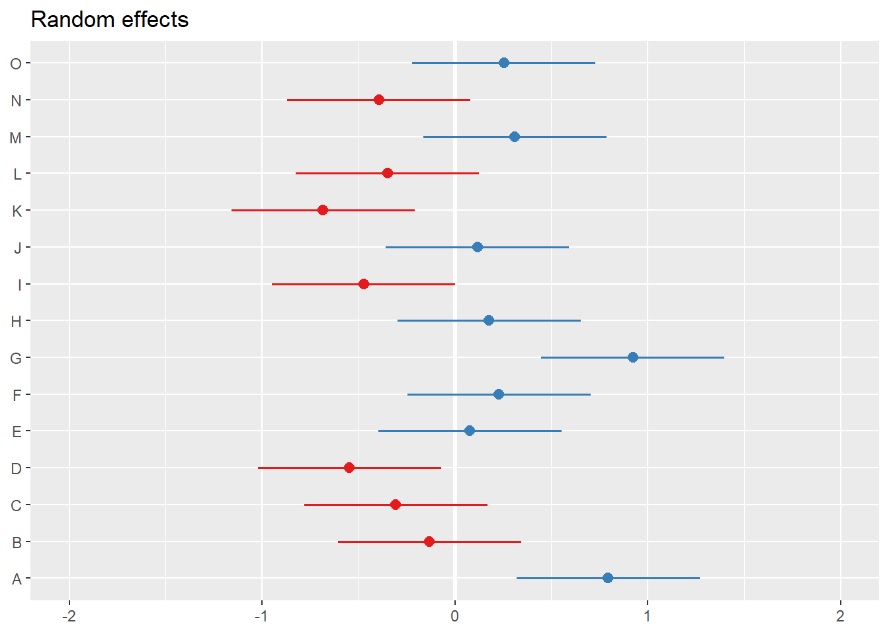

Chapter 2 Nested Within Groups
Lynette H. Bikos, PhD, ABPP, and Kiet D. Huynh, PhD
Co-Authors
options(scipen=999)#eliminates scientific notationThis chapter provides an introduction to multilevel modeling (MLM). Known by a variety of names, MLM offers researchers the ability to manage data that is nested within groups (cross-sectional), within persons (longitudinal), or both. MLM is complex and powerful. This chapter will provide an introduction and worked example of MLM when data is collected in groups (churches). At the risk of oversimplification, my goal is to make it as accessible as possible. To that end, the chapter and lecture will err on the side of application. If you are interested in the more technical details of this procedure, there are tremendous resources that far exceed my capacity and the purpose of this OER (e.g., Bryk & Raudenbush, 1992).
At the outset of this series of chapters on MLM, let me share with you why I get so excited about this statistical approach. Remember ANOVA? And its assumptions? Among these were assumptions of balanced designs (i.e., equal cell sizes); independence (i.e., unless using repeated measures ANOVA, participants could not be related/connected in other ways); and to rule out confounds, random assignment to treatment conditions. Unless the data to be analyzed comes from an experiment, these are difficult conditions to meet. When we use a multilevel approach to analyze cross-sectional research where there is clear nesting in groups (e.g., teams, classrooms) we are no longer bound by these restrictive assumptions. Presuming there is an adequate sample (Bell et al., 2014 suggested a minimum of 10 clusters with 5 members each),even the group size can vary. Of course there are other benefits and challenges that we will address throughout the series of chapters.
2.2 Multilevel Modeling: Nested within Groups
2.2.1 The dilemma of aggregation and disaggregation
It was the 1980s and researchers were studying group attitudes and were confused about how to analyze the data (Singer & Willett, 2003).They ran into difficulties with aggregation and asked, “Do we aggregate the data” by summing individuals within groups (i.e., giving everyone in the group the same score)?” Or, “Do we disaggregate the data” by ignoring group membership and analyzing the individual cases.
Problems with aggregation (using group means) include the following:
- Regression equations describe the relationship of means of predictors in individual clusters to the mean of the dependent variable in those clusters.
- There is a decrease in variability regarding the the ability to explain what is going on with the dependent variable.
- It can be misleading to generalize from the group level variable to the individual. This is termed the ecological fallacy (also known as the Robinson Effect).
Problems with disaggregation (using individual scores and ignoring the group influence) include:
- Results that ignore group level variables.
- There is often clustering among group members.
- Clustering (i.e., group effects, dependency in the data) violates the assumption of independence for most ANOVA and regression statistics.
- We are more likely to make a Type I error (i.e., declaring a statistically significant relationship when there is none) because
- Alpha inflation
- Standard error is based on N; standard errors are smaller than they should be.
- Dependency in the data may reduce within group variance.
2.2.2 Multilevel modeling: The definitional and conceptual
Multilevel modeling (MLM) has a host of names:
- Hierarchical linear modeling (but this also references a specific, fee-for-use, package)
- Mixed effects
- Linear mixed effects (LME – you’ll see this acronym in our R package and functions)
- Random coefficient regression (RCR)
- Random coefficient modeling (RCM)
By whatever name we call it, the random coefficient regression model is an alternative to ordinary least squares regression (OLS) that is structured to handle clustered data. Random coefficient regression differs from OLS regression in the assumptions made about the nature of the regression coefficients and the correlational structure of the individual observations.
Highlights of RC regression models,
- individuals are clustered into groups
- and we can have multiple levels of measurement at the individual and group levels),
- the equations are mathematically different from OLS regression,
- they can be applied cross-sectional and repeated measures designs.
In this chapter our focus is on the cross-sectional, nested analyses.

Image of a three-level model
“Levels” on these figures are important and represent the hierarchical structure of RCR.
- Level 1: lowest level of aggregation, the individual, a micro-level
- Level 2: cluster or group level, the macro-level
- Levels 3 +: higher-order clustering; beyond the scope of this class (and instructor).
As we work through this chapter we will be reviewing essential elements to MLM. These include:
- Levels
- Fixed and random effects
- Variance components
- Centering to maximize interpretability and a complete accounting of variance
- Equations
Because these are complicated, it makes sense to me to start introduce the research vignette a little earlier than usual so that we have a concrete example for locating these concepts. First, though, let’s look at how we manage an MLM analysis.
2.3 Workflow

Image of a workflow through a nested within-groups MLM
2.4 Research Vignette
The research vignette comes from Lefevor et al.’s (2020) article, “Homonegativity and the Black Church: Is congregational variation the missing link?” The article was published in The Counseling Psychlogist. I am so grateful to the authors who provided their R script. It was a terrific source of consultation as I planned the chapter.
Data is from congregants in 15 Black churches (with at least 200 members in each church) in a mid-sized city in the South. Congregational participation ranged from 2 to 28. The research design allows the analysts to identify individual level and contextual (i.e., congregational) level predictors of attitudes toward same-sex sexuality.
The research question asks, what individual-level and church-level predictors influence an indivdiual’s attitudes toward same-sex sexuality (i.e., homonegativity).
Variables used in the study included:
Attitudes toward Same Sex Sexuality(ATSS/homonegativity): The short form of the Attitudes Toward Lesbian Women and Gay Men Scale (Herek, 1994) is 10 items on a 5-point likert scale of agreement. Sample items include, “Sex between two men is just plan wrong” and “Lesbians are sick.” Higher scores represent more homonegative views.
Religiousness Organizational religiousness was assessed through with the single-item organizational religious activity scale of the Duke University Religiousness Index (Koenig & Büssing, 2010). The item asks participants to report how often they attend church or other religious meetings on a 9-point Likert-type scale ranging from 0 (never) to 9 (several times a week). Higher scores indicate more frequent attendance.
Racial homogeneity This was calculated by estimating the proportion of respondents from a single race prior to excluding those who did not meet the inclusion criteria (e.g., one criteria was that the participants self-identify as Black).
Age, Education, Gender: Along with other demographic and background variables, age, education, and gender were collected. Gender is dichotomous with 0 = woman and 1 = man.
In the article, Lefevor (2020) and colleagues predict attitudes toward same-sex sexuality from a number of person-level (L1) and congregation-level (L2) predictors. Because this is an instructional article, we are choosing one each: attendance (used as both L1 and L2) and homogeneity of the congregation (L2). Although the authors do not include cross-level (i.e., an interaction between L1 and L2 variables), we will test a cross-level interaction of attendance*homogeneity.
2.4.1 Simulating the data from the journal article
Muldoon (2018) has provided clear and intuitive instructions for simulating multilevel data.
Simulating the data gives us some information about the nature of MLM. You can see that we have identified:
- the number of churches
- the number of members from each church
- Note: in this simulation we have the benefit of non-missing data (unless we specify it)
- the b weights (and ranges) reported in the Lefevor et al. (2020) article
- the mean and standard deviation of the dependent variable
Further down in the code, we feed R the regression equation.
set.seed(200407)
n_church = 15
n_mbrs = 15
b0 = 3.43 #intercept for ATSS
b1 = .14 #b weight for L1 var gender
b2 = .00 #b weight or L1 var age
b3 = .02 #b weight for L1 var education
b4 = .10 #b weight for the L1 variable religious attendance
b5 = -.89 #b weight for the L2 variable, racial homogeneity
( Gender = runif(n_church*n_mbrs, -1.09, 1.67)) #calc L1 gender
( Age = runif(n_church*n_mbrs, 6.44, 93.93)) #calc L1 age
( Education = runif(n_church*n_mbrs, 0, 8.46)) #calc L1 education
( Attendance = runif(n_church*n_mbrs,5.11, 10.39)) #calc L1 attendance by grabbing its M +/- 3SD
( Homogeneity = rep (runif(n_church, .37, 1.45), each = n_mbrs)) #calc L2 homogeneity by grabbing its M +/- 3SD
mu = 3.39
sds = .64 #this is the SD of the DV
sd = 1 #this is the observation-level random effect variance that we set at 1
( church = rep(LETTERS[1:n_church], each = n_mbrs) )
#( mbrs = numbers[1:(n_church*n_mbrs)] )
( churcheff = rnorm(n_church, 0, sds) )
( churcheff = rep(churcheff, each = n_mbrs) )
( mbrseff = rnorm(n_church*n_mbrs, 0, sd) )
( ATSS = b0 + b1*Gender + b2*Age + b3*Education + b4*Attendance + b5*Homogeneity + churcheff + mbrseff)
( dat = data.frame(church, churcheff, mbrseff, Gender, Age, Education, Attendance, Homogeneity, ATSS) )
library(dplyr)
dat <- dat %>% mutate(ID = row_number())
#moving the ID number to the first column; requires
dat <- dat%>%select(ID, everything())
Lefevor2020 <- dat%>%
select(ID, church, Gender, Age, Education, Attendance, Homogeneity, ATSS)
#rounded gender into dichotomous variable
Lefevor2020$Female0 <- round(Lefevor2020$Gender, 0)
Lefevor2020$Female0 <- as.integer(Lefevor2020$Gender)
Lefevor2020$Female0 <- plyr::mapvalues(Lefevor2020$Female0, from = c(-1, 0, 1), to = c(0, 0, 1))
#( dat$ATSS = with(dat, mu + churcheff + mbrseff ) )Below is script that will allow you to export and reimport the dataset we just simulated. This may come in handy if you wish to start from the simulated data (and not wait for the simulation each time) and/or if you would like to use the dataset for further practice.
write.table(Lefevor2020, file="Lefevor2020.csv", sep=",", col.names=TRUE, row.names=FALSE)
Lefevor2020 <- read.csv ("Lefevor2020.csv", head = TRUE, sep = ",")Because we are simulating data, we have the benefit of no missingness and relatively normal distributions. Because of these reasons we will skip the formal data preparation stage. We will, though, take a look at our characteristics and bivariate relations of our three variables of interest.
2.5 Working the Problem (and learning MLM)
2.5.1 Data diagnostics
Multilevel modeling holds assumptions that will likely be familiar to use:
- linearity
- homogeneity of variance
- normal distribution of the model’s residuals
Because I cover strategies for evaluating these assumptions in the Data Dx chapter, I won’t review them here. Another helpful resource for reviewing assumptions related to MLM is provided in by Michael Palmeri.
We should, though take a look at the relations between the variables in our model in their natural form. In this case natural refers to their scored, ready-to-be-analyzed (but not further centered).
library(psych)
psych::pairs.panels(Lefevor2020[c("ATSS", "Attendance", "Homogeneity")], stars = TRUE) What do we observe in this preliminary, zero-ordered relationship?
What do we observe in this preliminary, zero-ordered relationship?
- As racial homogeneity increases, homonegativity decreases.
- Curiously, there is a non-linear curve between those two variables – but that seems to be “pulled” by an outlier(?) in the lower right quandrant of the ATSS/Homonegativity relationship.
- ATTS appears to be normally distributed
- Attendance has a flat distribution
We can learn more by examining descriptive statistics.
psych::describe(Lefevor2020[c("ATSS", "Attendance", "Homogeneity")]) vars n mean sd median trimmed mad min max range skew
ATSS 1 225 3.32 1.18 3.43 3.34 1.11 -1.23 6.45 7.69 -0.30
Attendance 2 225 7.52 1.52 7.36 7.47 1.84 5.12 10.35 5.22 0.24
Homogeneity 3 225 1.04 0.25 1.14 1.04 0.34 0.69 1.40 0.71 -0.04
kurtosis se
ATSS 0.27 0.08
Attendance -1.19 0.10
Homogeneity -1.60 0.02These descriptives allow us a glimpse of the means and standard deviations of our study variables. Additionally, we can look at skew and kurtosis to see that our variables are within the normal ranges (i.e., below 3 for skew; below 8 for kurtosis (Kline, 2016)).
2.5.2 Levels
Levels are a critical component of MLM. In the context of MLM models of nesting within groups/clusters (e.g., cross-sectional MLM):
- Level 1 (L1) variables “belong to the person”
- Age, race, attitudinal or behavioral assessment
- Level 2 (L2) variables “belong to the group/cluster”
- Leader characteristic, economic indicator that is unique to the group/cluster
- Aggregate/composite representation of L1 variables
In our tiny model from the Lefevor et al. (2020) vignette:
- ATSS/homonegativity is our DV; it is an L1 observation because we are predicting individual’s attitudes toward same-sex sexuality.
- Attendance is an L1 observation when we are using it as the individual’s own church attendance.
- Attendance will be an L2 observation when we aggregate it an use it as a value to represent the church.
- Racial homogeneity is only entered as an L2 variable. It was collected at the individual level via self-identification of race and calculated to represent the proportion of Black individuals in the church.
head(Lefevor2020[c("church", "ATSS", "Attendance", "Homogeneity")], n = 30L) church ATSS Attendance Homogeneity
1 A 4.7835442 6.318674 0.7957395
2 A 5.3851521 9.391428 0.7957395
3 A 4.3722317 9.832894 0.7957395
4 A 4.8635210 7.721731 0.7957395
5 A 4.9733886 9.917289 0.7957395
6 A 4.3455429 8.844333 0.7957395
7 A 3.5357514 6.630585 0.7957395
8 A 4.1572480 8.111701 0.7957395
9 A 4.2946421 9.658424 0.7957395
10 A 3.9311877 5.743799 0.7957395
11 A 4.9380802 6.048393 0.7957395
12 A 4.6318423 5.908200 0.7957395
13 A 3.4139728 7.685524 0.7957395
14 A 2.6348562 6.900703 0.7957395
15 A 4.8415811 6.594790 0.7957395
16 B 0.9835024 6.176724 1.1691398
17 B 1.9247771 7.907341 1.1691398
18 B 3.7576164 5.469059 1.1691398
19 B 3.6992782 9.262913 1.1691398
20 B 2.9125454 9.001514 1.1691398
21 B 4.0568240 7.486189 1.1691398
22 B 1.2471085 9.417031 1.1691398
23 B 3.2280375 6.066014 1.1691398
24 B 3.7688923 7.413705 1.1691398
25 B 4.0418646 6.047803 1.1691398
26 B 5.4240898 7.157878 1.1691398
27 B 3.8355654 9.687518 1.1691398
28 B 2.6657722 5.972512 1.1691398
29 B 2.8502831 9.761905 1.1691398
30 B 2.8982202 9.689345 1.1691398In this display of the first 30 rows, we see the data for the first two churches (i.e., A and B). The value is (potentially) different for each individual in each church for the two L1 variables: ATSS, Attendance. In contrast, the value of the variable is constant for the L2 variable, Homogeneity for churches A and B.
2.5.3 Centering
Before we continue with modeling, we need to consider centering. That is, we transform our predictor variables to give the intercept parameters more useful interpretations.
While there are some general practices, there are often arguments for different approaches:
- We usually focus centering on L1 predictors.
- We usually focus centering on continuously scaled variables.
- Dichotomous variables are considered to be centered, so long as there is a meaningful 0 (e.g., control group = 0; treatment group = 1), many do not further center.
- Newsom (2019), though, argues that if a binary variable is an L1 predictor, group mean centering produces intercepts weighted by the proportion of 1 to 0 values for each group; grand mean centering provides the sample weight adjustment to make the sample mean (each group’s mean) proportionate to the population (full sample)
- Dependent variables are generally not centered
we generally consider three centering strategies:
The natural metric is ideal if the variable has a meaningful zero point (e.g., drug dosage, time). It is more difficult when there is a non-zero metric. When there are dichotomous variables, the natural metric works well (i.e., 0 = control group, 1 = treatment group). The natural metric is an acceptable choice when the interest is only on the effects of L1 variables, rather than on the effects of group-level variables.
Grand mean centering (GCM) involves subtracting the mean from each case’s score on the variable. The intercept is interpreted as the expected value of the DV for a person/group that is compared with all individuals/groups.
- Intercepts are adjusted group means (like an ANCOVA model)
- Variance in the intercepts represents between-group variance in the adjusted means (i.e., adjusted for L1 predictors)
- The effects of L1 predictors are partialed out (controlled for) of the between-group variance
- GCM is most useful when we are interested in
- L2 predictors with L1 covariates
- Interactions specified L2
- GCM is a good choice when the primary interest is on the effects of L2 variables, controlling for the L1 predictors.
Group mean centering or Centering within Context (CWC) involves subtracting the mean of the individual’s group from each score. The L1 intercept is interpreted as the expected mean on the DV for the person’s group. Group mean centering/CWC:
- Provides a measure of the IV that accounts for one’s relative standing within the group
- Removes between-group variability from the model (deviations rom the group means are now the predictors)
- If we only use group mean centering (CWC), we lose information about between-group differences
- Assumes that relative standing within the group is an important factor
- Is most useful when we are interested in
- Relations among L1 variables
- Interactions among L1 variables
- Interactions between L1 and L2 variables
- CWC is an acceptable choice when the interest is only on the effects of L1 variables, rather than on the effects of group-level variables because it provides unbiased estimates of the pooled within group effect of an individual variable.
In the case of making centering choices with our variables, we are must think about the frog pond effect. That is, for the same size frog, the experience of being in a pond with big frogs may be different from being in a pond with small frogs. When we consider our present research vignette, we might ask,
- Does the effect of church attendance on ATSS depend only on the individual’s own church attendance. Or,
- Does the overall church attendance (“size” of the pond) also related to ATSS?
Compositional effects (Enders & Tofighi, 2007) involves transforming the natural metric of the score into a group-mean centered (CWC) variable at L1 and a group mean aggregate at L2. Both the CWC/L1 and aggregate/L2 are entered into the MLM.
- When the aggregate is added back in at L2, we get direct estimates of both the within- and between- group effects through group-mean centering
- We term it compositional effects because it represents the difference between the contextual-level effect and the person-level predictor.
- This is a great strategy when the interest is on distinguishing individual effects of variables (e.g., church attendance) from group-level effects of that same variable (e.g., overall church attendance).
Following the Lefevor and colleagues’ (2020) example, we will use the compositional effects approach with our data. The group.center() function in the R package, robumeta will group mean center (CWC) variables. All we need to do is identify the clustering variable in our case, “church.”
Similarly, robumeta’s group.mean function will aggregate variables at the group’s mean.
library(robumeta)
Lefevor2020$AttendL1 <- as.numeric(group.center(Lefevor2020$Attendance, Lefevor2020$church))#centered within context (group mean centering)
Lefevor2020$AttendL2 <- as.numeric(group.mean(Lefevor2020$Attendance, Lefevor2020$church))#aggregated at group meanhead(Lefevor2020[c("church", "ATSS", "Attendance", "AttendL1", "AttendL2", "Homogeneity")], n = 30L) church ATSS Attendance AttendL1 AttendL2 Homogeneity
1 A 4.7835442 6.318674 -1.368556846 7.687231 0.7957395
2 A 5.3851521 9.391428 1.704196481 7.687231 0.7957395
3 A 4.3722317 9.832894 2.145662408 7.687231 0.7957395
4 A 4.8635210 7.721731 0.034499326 7.687231 0.7957395
5 A 4.9733886 9.917289 2.230057976 7.687231 0.7957395
6 A 4.3455429 8.844333 1.157102115 7.687231 0.7957395
7 A 3.5357514 6.630585 -1.056646112 7.687231 0.7957395
8 A 4.1572480 8.111701 0.424469781 7.687231 0.7957395
9 A 4.2946421 9.658424 1.971192960 7.687231 0.7957395
10 A 3.9311877 5.743799 -1.943432538 7.687231 0.7957395
11 A 4.9380802 6.048393 -1.638837820 7.687231 0.7957395
12 A 4.6318423 5.908200 -1.779031167 7.687231 0.7957395
13 A 3.4139728 7.685524 -0.001707147 7.687231 0.7957395
14 A 2.6348562 6.900703 -0.786528003 7.687231 0.7957395
15 A 4.8415811 6.594790 -1.092441414 7.687231 0.7957395
16 B 0.9835024 6.176724 -1.591106297 7.767830 1.1691398
17 B 1.9247771 7.907341 0.139510679 7.767830 1.1691398
18 B 3.7576164 5.469059 -2.298771340 7.767830 1.1691398
19 B 3.6992782 9.262913 1.495083015 7.767830 1.1691398
20 B 2.9125454 9.001514 1.233683676 7.767830 1.1691398
21 B 4.0568240 7.486189 -0.281641399 7.767830 1.1691398
22 B 1.2471085 9.417031 1.649200996 7.767830 1.1691398
23 B 3.2280375 6.066014 -1.701816135 7.767830 1.1691398
24 B 3.7688923 7.413705 -0.354124518 7.767830 1.1691398
25 B 4.0418646 6.047803 -1.720027268 7.767830 1.1691398
26 B 5.4240898 7.157878 -0.609951815 7.767830 1.1691398
27 B 3.8355654 9.687518 1.919687868 7.767830 1.1691398
28 B 2.6657722 5.972512 -1.795317977 7.767830 1.1691398
29 B 2.8502831 9.761905 1.994075223 7.767830 1.1691398
30 B 2.8982202 9.689345 1.921515292 7.767830 1.1691398If we look again at the first two churches, we can see the
- Natural metric (ATSS, Attendance) which differs for each person across all churches
- This would be an L1 variable
- Group-mean centering (CWC; ATSSL2) which is identifiable because if you added up each of the values in each of the churches, the sum would be zero for each church
- This would be an L1 variable
- Aggregate group mean (AttendL2) which is identifiable because the value is constant across each of the groups
- This would be an L2 variable
- You might notice, I didn’t mention the homogeneity variable. This is because it was collected and entered as an L2 variable and needs no further centering/transformation. Similarly, we typically leave the dependent variable (ATSS) in the natural metric.
We can also see the effects of centering in our descriptives.
psych::describe(Lefevor2020[c("ATSS", "Attendance", "AttendL1", "AttendL2", "Homogeneity")]) vars n mean sd median trimmed mad min max range skew
ATSS 1 225 3.32 1.18 3.43 3.34 1.11 -1.23 6.45 7.69 -0.30
Attendance 2 225 7.52 1.52 7.36 7.47 1.84 5.12 10.35 5.22 0.24
AttendL1 3 225 0.00 1.48 -0.01 -0.02 1.88 -2.93 3.01 5.94 0.10
AttendL2 4 225 7.52 0.32 7.55 7.52 0.33 7.01 8.06 1.05 0.02
Homogeneity 5 225 1.04 0.25 1.14 1.04 0.34 0.69 1.40 0.71 -0.04
kurtosis se
ATSS 0.27 0.08
Attendance -1.19 0.10
AttendL1 -1.14 0.10
AttendL2 -0.93 0.02
Homogeneity -1.60 0.02Note that the mean for the ATTSL1 and AttendL1 variables are now zero, while the aggregated group means are equal to the mean of the natural metric.
Looking at the descriptives for each church also helps clarify what we have done.
psych::describeBy(ATSS + Attendance + AttendL1 + AttendL2 + Homogeneity ~ church, data = Lefevor2020)
Descriptive statistics by group
church: A
vars n mean sd median trimmed mad min max range skew
ATSS 1 15 4.34 0.72 4.37 4.39 0.70 2.63 5.39 2.75 -0.78
Attendance 2 15 7.69 1.52 7.69 7.67 2.03 5.74 9.92 4.17 0.23
AttendL1 3 15 0.00 1.52 0.00 -0.02 2.03 -1.94 2.23 4.17 0.23
AttendL2 4 15 7.69 0.00 7.69 7.69 0.00 7.69 7.69 0.00 NaN
Homogeneity 5 15 0.80 0.00 0.80 0.80 0.00 0.80 0.80 0.00 NaN
kurtosis se
ATSS -0.21 0.19
Attendance -1.63 0.39
AttendL1 -1.63 0.39
AttendL2 NaN 0.00
Homogeneity NaN 0.00
------------------------------------------------------------
church: B
vars n mean sd median trimmed mad min max range skew
ATSS 1 15 3.15 1.15 3.23 3.15 0.83 0.98 5.42 4.44 -0.22
Attendance 2 15 7.77 1.59 7.49 7.79 2.24 5.47 9.76 4.29 -0.01
AttendL1 3 15 0.00 1.59 -0.28 0.02 2.24 -2.30 1.99 4.29 -0.01
AttendL2 4 15 7.77 0.00 7.77 7.77 0.00 7.77 7.77 0.00 NaN
Homogeneity 5 15 1.17 0.00 1.17 1.17 0.00 1.17 1.17 0.00 NaN
kurtosis se
ATSS -0.50 0.30
Attendance -1.75 0.41
AttendL1 -1.75 0.41
AttendL2 NaN 0.00
Homogeneity NaN 0.00
------------------------------------------------------------
church: C
vars n mean sd median trimmed mad min max range skew
ATSS 1 15 2.93 0.92 2.98 2.90 1.14 1.68 4.58 2.91 0.14
Attendance 2 15 7.01 1.01 6.78 6.95 0.87 5.83 8.96 3.13 0.75
AttendL1 3 15 0.00 1.01 -0.22 -0.06 0.87 -1.18 1.95 3.13 0.75
AttendL2 4 15 7.01 0.00 7.01 7.01 0.00 7.01 7.01 0.00 NaN
Homogeneity 5 15 1.22 0.00 1.22 1.22 0.00 1.22 1.22 0.00 NaN
kurtosis se
ATSS -1.20 0.24
Attendance -0.88 0.26
AttendL1 -0.88 0.26
AttendL2 NaN 0.00
Homogeneity NaN 0.00
------------------------------------------------------------
church: D
vars n mean sd median trimmed mad min max range skew
ATSS 1 15 2.62 1.07 2.79 2.64 1.43 0.88 4.10 3.22 -0.21
Attendance 2 15 8.06 1.85 8.41 8.12 2.27 5.12 10.20 5.08 -0.29
AttendL1 3 15 0.00 1.85 0.36 0.06 2.27 -2.93 2.14 5.08 -0.29
AttendL2 4 15 8.06 0.00 8.06 8.06 0.00 8.06 8.06 0.00 NaN
Homogeneity 5 15 1.18 0.00 1.18 1.18 0.00 1.18 1.18 0.00 NaN
kurtosis se
ATSS -1.54 0.28
Attendance -1.71 0.48
AttendL1 -1.71 0.48
AttendL2 NaN 0.00
Homogeneity NaN 0.00
------------------------------------------------------------
church: E
vars n mean sd median trimmed mad min max range skew
ATSS 1 15 3.42 0.92 3.57 3.41 0.49 1.70 5.33 3.63 -0.05
Attendance 2 15 8.00 1.70 7.95 8.02 2.27 5.50 10.33 4.82 -0.01
AttendL1 3 15 0.00 1.70 -0.05 0.01 2.27 -2.50 2.32 4.82 -0.01
AttendL2 4 15 8.00 0.00 8.00 8.00 0.00 8.00 8.00 0.00 NaN
Homogeneity 5 15 1.32 0.00 1.32 1.32 0.00 1.32 1.32 0.00 NaN
kurtosis se
ATSS -0.49 0.24
Attendance -1.56 0.44
AttendL1 -1.56 0.44
AttendL2 NaN 0.00
Homogeneity NaN 0.00
------------------------------------------------------------
church: F
vars n mean sd median trimmed mad min max range skew
ATSS 1 15 3.61 1.04 3.44 3.57 0.96 2.11 5.67 3.56 0.46
Attendance 2 15 7.27 1.18 7.27 7.19 1.04 5.68 9.90 4.22 0.69
AttendL1 3 15 0.00 1.18 0.00 -0.08 1.04 -1.59 2.63 4.22 0.69
AttendL2 4 15 7.27 0.00 7.27 7.27 0.00 7.27 7.27 0.00 NaN
Homogeneity 5 15 0.93 0.00 0.93 0.93 0.00 0.93 0.93 0.00 NaN
kurtosis se
ATSS -0.95 0.27
Attendance -0.33 0.30
AttendL1 -0.33 0.30
AttendL2 NaN 0.00
Homogeneity NaN 0.00
------------------------------------------------------------
church: G
vars n mean sd median trimmed mad min max range skew
ATSS 1 15 4.51 0.94 4.49 4.44 1.08 3.48 6.45 2.98 0.65
Attendance 2 15 7.01 0.94 7.18 7.01 1.27 5.50 8.47 2.96 -0.05
AttendL1 3 15 0.00 0.94 0.17 0.00 1.27 -1.50 1.46 2.96 -0.05
AttendL2 4 15 7.01 0.00 7.01 7.01 0.00 7.01 7.01 0.00 NaN
Homogeneity 5 15 0.71 0.00 0.71 0.71 0.00 0.71 0.71 0.00 NaN
kurtosis se
ATSS -0.94 0.24
Attendance -1.35 0.24
AttendL1 -1.35 0.24
AttendL2 NaN 0.00
Homogeneity NaN 0.00
------------------------------------------------------------
church: H
vars n mean sd median trimmed mad min max range skew
ATSS 1 15 3.55 1.19 3.48 3.55 0.84 1.20 5.83 4.63 -0.17
Attendance 2 15 7.35 1.70 7.57 7.30 2.45 5.13 10.20 5.07 0.23
AttendL1 3 15 0.00 1.70 0.22 -0.05 2.45 -2.22 2.86 5.07 0.23
AttendL2 4 15 7.35 0.00 7.35 7.35 0.00 7.35 7.35 0.00 NaN
Homogeneity 5 15 0.82 0.00 0.82 0.82 0.00 0.82 0.82 0.00 NaN
kurtosis se
ATSS -0.43 0.31
Attendance -1.46 0.44
AttendL1 -1.46 0.44
AttendL2 NaN 0.00
Homogeneity NaN 0.00
------------------------------------------------------------
church: I
vars n mean sd median trimmed mad min max range skew
ATSS 1 15 2.71 1.13 2.73 2.71 0.83 0.68 4.76 4.08 0.16
Attendance 2 15 7.26 1.63 7.25 7.20 2.26 5.14 10.17 5.03 0.12
AttendL1 3 15 0.00 1.63 -0.01 -0.06 2.26 -2.12 2.90 5.03 0.12
AttendL2 4 15 7.26 0.00 7.26 7.26 0.00 7.26 7.26 0.00 NaN
Homogeneity 5 15 1.28 0.00 1.28 1.28 0.00 1.28 1.28 0.00 NaN
kurtosis se
ATSS -0.61 0.29
Attendance -1.43 0.42
AttendL1 -1.43 0.42
AttendL2 NaN 0.00
Homogeneity NaN 0.00
------------------------------------------------------------
church: J
vars n mean sd median trimmed mad min max range skew
ATSS 1 15 3.47 0.99 3.81 3.50 1.05 1.67 4.90 3.23 -0.44
Attendance 2 15 7.86 1.89 7.89 7.88 2.89 5.25 10.25 5.00 -0.09
AttendL1 3 15 0.00 1.89 0.03 0.02 2.89 -2.62 2.39 5.00 -0.09
AttendL2 4 15 7.86 0.00 7.86 7.86 0.00 7.86 7.86 0.00 NaN
Homogeneity 5 15 1.14 0.00 1.14 1.14 0.00 1.14 1.14 0.00 NaN
kurtosis se
ATSS -0.94 0.26
Attendance -1.70 0.49
AttendL1 -1.70 0.49
AttendL2 NaN 0.00
Homogeneity NaN 0.00
------------------------------------------------------------
church: K
vars n mean sd median trimmed mad min max range skew
ATSS 1 15 2.45 1.04 2.53 2.41 1.09 0.92 4.49 3.57 0.30
Attendance 2 15 7.43 1.83 6.73 7.40 2.10 5.31 10.03 4.72 0.15
AttendL1 3 15 0.00 1.83 -0.71 -0.04 2.10 -2.12 2.59 4.72 0.15
AttendL2 4 15 7.43 0.00 7.43 7.43 0.00 7.43 7.43 0.00 NaN
Homogeneity 5 15 1.37 0.00 1.37 1.37 0.00 1.37 1.37 0.00 NaN
kurtosis se
ATSS -0.82 0.27
Attendance -1.81 0.47
AttendL1 -1.81 0.47
AttendL2 NaN 0.00
Homogeneity NaN 0.00
------------------------------------------------------------
church: L
vars n mean sd median trimmed mad min max range skew
ATSS 1 15 2.87 0.95 2.94 2.82 1.12 1.73 4.67 2.94 0.5
Attendance 2 15 7.68 1.27 7.54 7.69 1.36 5.57 9.71 4.14 0.1
AttendL1 3 15 0.00 1.27 -0.15 0.01 1.36 -2.11 2.03 4.14 0.1
AttendL2 4 15 7.68 0.00 7.68 7.68 0.00 7.68 7.68 0.00 NaN
Homogeneity 5 15 1.40 0.00 1.40 1.40 0.00 1.40 1.40 0.00 NaN
kurtosis se
ATSS -1.06 0.25
Attendance -1.33 0.33
AttendL1 -1.33 0.33
AttendL2 NaN 0.00
Homogeneity NaN 0.00
------------------------------------------------------------
church: M
vars n mean sd median trimmed mad min max range skew
ATSS 1 15 3.72 0.79 3.93 3.72 0.73 2.34 5.06 2.72 -0.27
Attendance 2 15 7.56 1.52 7.80 7.52 1.94 5.45 10.07 4.63 0.12
AttendL1 3 15 0.00 1.52 0.25 -0.03 1.94 -2.11 2.52 4.63 0.12
AttendL2 4 15 7.56 0.00 7.56 7.56 0.00 7.56 7.56 0.00 NaN
Homogeneity 5 15 0.81 0.00 0.81 0.81 0.00 0.81 0.81 0.00 NaN
kurtosis se
ATSS -1.06 0.20
Attendance -1.42 0.39
AttendL1 -1.42 0.39
AttendL2 NaN 0.00
Homogeneity NaN 0.00
------------------------------------------------------------
church: N
vars n mean sd median trimmed mad min max range skew
ATSS 1 15 2.82 1.79 3.11 2.91 1.51 -1.23 5.61 6.84 -0.48
Attendance 2 15 7.55 1.44 7.66 7.55 1.08 5.24 9.79 4.55 -0.10
AttendL1 3 15 0.00 1.44 0.11 0.01 1.08 -2.31 2.24 4.55 -0.10
AttendL2 4 15 7.55 0.00 7.55 7.55 0.00 7.55 7.55 0.00 NaN
Homogeneity 5 15 0.69 0.00 0.69 0.69 0.00 0.69 0.69 0.00 NaN
kurtosis se
ATSS -0.38 0.46
Attendance -1.27 0.37
AttendL1 -1.27 0.37
AttendL2 NaN 0.00
Homogeneity NaN 0.00
------------------------------------------------------------
church: O
vars n mean sd median trimmed mad min max range skew
ATSS 1 15 3.65 0.91 3.75 3.67 0.63 1.71 5.28 3.57 -0.67
Attendance 2 15 7.34 1.53 6.68 7.23 1.31 5.70 10.35 4.64 0.58
AttendL1 3 15 0.00 1.53 -0.65 -0.11 1.31 -1.63 3.01 4.64 0.58
AttendL2 4 15 7.34 0.00 7.34 7.34 0.00 7.34 7.34 0.00 NaN
Homogeneity 5 15 0.79 0.00 0.79 0.79 0.00 0.79 0.79 0.00 NaN
kurtosis se
ATSS 0.11 0.23
Attendance -1.16 0.40
AttendL1 -1.16 0.40
AttendL2 NaN 0.00
Homogeneity NaN 0.00Tables are produced for each church’s data. Again, because of group-mean centering (CWC) the mean of the ATSSL1 and AttendL1 variables are 0. The values of the ATSSL2 and AttendL1 variables equal the natural metric. These, though, are different for each of the churches.
Looking at the correlations between all forms of these variables can further help clarify why the compositional effects approach is useful.
#Multilevel level correlation matrix
apaTables::apa.cor.table(Lefevor2020[c(
"ATSS", "Attendance", "AttendL1", "AttendL2", "Homogeneity")], show.conf.interval = FALSE, landscape = TRUE, table.number = 1, filename="ML_CorMatrix.doc")The ability to suppress reporting of reporting confidence intervals has been deprecated in this version.
The function argument show.conf.interval will be removed in a later version.
Table 1
Means, standard deviations, and correlations with confidence intervals
Variable M SD 1 2 3 4
1. ATSS 3.32 1.18
2. Attendance 7.52 1.52 .10
[-.03, .23]
3. AttendL1 -0.00 1.48 .12 .98**
[-.01, .25] [.97, .98]
4. AttendL2 7.52 0.32 -.10 .21** -.00
[-.23, .03] [.08, .33] [-.13, .13]
5. Homogeneity 1.04 0.25 -.33** .07 .00 .32**
[-.44, -.21] [-.07, .19] [-.13, .13] [.19, .43]
Note. M and SD are used to represent mean and standard deviation, respectively.
Values in square brackets indicate the 95% confidence interval.
The confidence interval is a plausible range of population correlations
that could have caused the sample correlation (Cumming, 2014).
* indicates p < .05. ** indicates p < .01.
The AttendL2 (aggregated group means) we created correlates with the Attendance (natural metric) version. However, it has ZERO correlation with the AttendL1 (group-mean centered, CWC) version. This means that it effectively and completely separates within- and between-subjects variance. If we enter these both into the MLM prediction equation, we will completely capture the within- and between-subjects contributions of attendance.
The compositional effects approach to representing L1 variables also works well with longitudinal MLM.
2.5.4 Model Building
Multilevel modelers often approach model building in a systematic and sequential manner. This approach was true for Lefevor and colleagues (2020) who planned a four staged approach, but stopped after three because it appeared that adding the next term would not result in model improvement. The four planned steps include:
- Examining an intercept-only model
- Adding the L1 variables
- Adding the L2 variables
- Adding cross-level interactions
2.5.4.1 Model 1: The empty model
This preliminary model has several names: unconditional cell means model, one-way ANOVA with random effects, intercept-only model, and empty model. Why? The only variable in the model is the DV. That is, it is a model with no predictors.
As you can see in the script below, we are specifying its intercept (~1). The “(1 | church)” portion of the code indicates there is a random intercept with a fixed mean. That is, the formula acknowledges that the ATSS means will differ across churches. This model will have no slope. That is, each individual score is predicted solely from the mean. In another lecture, I talk about the transition from null hypothesis statistical testing to statistical modeling. In that lecture I reflected on Cumming’s (2014) notion that “even the mean is a model” – that it explains something and not others. In this circumstance, the mean is a model! What is, perhaps, unique about this model is that the code below allows the mean to vary across groups.
There are two packages (lme4, nlme) that are primarily used for MLM. We are providing the code for both because – although the core features are identical – they are slightly different. The lmerTest package offers some handy follow-up tests that help us understand our results. Finally, the tab_model() function from the sjPlot package will help create a table that is readily usable in an APA style journal article.
library(lme4)
Mod1 <- lmer(ATSS ~1 + (1 | church), REML = FALSE, data = Lefevor2020)
summary(Mod1)Linear mixed model fit by maximum likelihood . t-tests use Satterthwaite's
method [lmerModLmerTest]
Formula: ATSS ~ 1 + (1 | church)
Data: Lefevor2020
AIC BIC logLik deviance df.resid
694.7 705.0 -344.4 688.7 222
Scaled residuals:
Min 1Q Median 3Q Max
-3.9130 -0.6410 0.0392 0.5764 2.5252
Random effects:
Groups Name Variance Std.Dev.
church (Intercept) 0.2673 0.5171
Residual 1.1299 1.0630
Number of obs: 225, groups: church, 15
Fixed effects:
Estimate Std. Error df t value Pr(>|t|)
(Intercept) 3.3214 0.1511 15.0000 21.98 0.000000000000803 ***
---
Signif. codes: 0 '***' 0.001 '**' 0.01 '*' 0.05 '.' 0.1 ' ' 1AIC(Mod1) # request AIC[1] 694.73BIC(Mod1) # request BIC[1] 704.9783library(nlme)
ModB1 <- lme(ATSS ~ 1, random = ~ 1|church, method="ML", na.action = na.omit, data = Lefevor2020)
summary(ModB1)Linear mixed-effects model fit by maximum likelihood
Data: Lefevor2020
AIC BIC logLik
694.73 704.9783 -344.365
Random effects:
Formula: ~1 | church
(Intercept) Residual
StdDev: 0.5170587 1.062978
Fixed effects: ATSS ~ 1
Value Std.Error DF t-value p-value
(Intercept) 3.321371 0.1514833 210 21.92566 0
Standardized Within-Group Residuals:
Min Q1 Med Q3 Max
-3.91296264 -0.64096244 0.03922427 0.57637964 2.52520439
Number of Observations: 225
Number of Groups: 15 anova(ModB1) # request F-tests for fixed effects numDF denDF F-value p-value
(Intercept) 1 210 480.7347 <.0001library(lmerTest)
ranova(Mod1) # request test of random effectsANOVA-like table for random-effects: Single term deletions
Model:
ATSS ~ (1 | church)
npar logLik AIC LRT Df Pr(>Chisq)
<none> 3 -344.37 694.73
(1 | church) 2 -356.89 717.79 25.06 1 0.0000005558 ***
---
Signif. codes: 0 '***' 0.001 '**' 0.01 '*' 0.05 '.' 0.1 ' ' 1confint(Mod1) # request test of random effects (variance displayed as SD)Computing profile confidence intervals ... 2.5 % 97.5 %
.sig01 0.3231248 0.8347723
.sigma 0.9688860 1.1733458
(Intercept) 3.0051108 3.6376320# Extract Variances to compute R^2
var_table = as.data.frame(VarCorr(Mod1))
Mod1_var_tot = var_table[1,'vcov'] + var_table[2,'vcov'] # var_table[1,'vcov'] = L1 var; var_table[2,'vcov'] = L2 var;
library(sjPlot)Learn more about sjPlot with 'browseVignettes("sjPlot")'.tab_model(Mod1, ModB1, p.style = "numeric", show.ci = FALSE, show.se = TRUE, show.df = FALSE, show.re.var = TRUE, show.aic = TRUE, show.dev = TRUE, use.viewer = TRUE, dv.labels = c("Mod1", "ModB1"))| Mod1 | ModB1 | |||||
|---|---|---|---|---|---|---|
| Predictors | Estimates | std. Error | p | Estimates | std. Error | p |
| (Intercept) | 3.32 | 0.15 | <0.001 | 3.32 | 0.15 | <0.001 |
| Random Effects | ||||||
| σ2 | 1.13 | 1.13 | ||||
| τ00 | 0.27 church | 0.27 church | ||||
| ICC | 0.19 | 0.19 | ||||
| N | 15 church | 15 church | ||||
| Observations | 225 | 225 | ||||
| Marginal R2 / Conditional R2 | 0.000 / 0.191 | 0.000 / 0.191 | ||||
| Deviance | 688.730 | 688.730 | ||||
| AIC | 694.730 | 694.730 | ||||
#can swap this statement with the "file = "TabMod_Table"" to get Viewer output or the outfile that you can open in Word
#file = "TabMod_Table.doc"It is customary to report MLM models side-by-side for comparison. In this first run, I have extracted the intercept-only models from both the lmer() and nlme() runs to show that the results are identical. In subsequent runs, I will pull from the lmer() models.
The unconditional cell means model is equivalent to a one-factor random effects ANOVA of attitudes toward same-sex sexuality as the sole factor; the 15 churches become the 15 levels of the churches factor.
With the plot_model() function in sjPlot, we can plot the random effects. For this intercept-only model, we see the mean and range of the ATSS variable
library(sjPlot)
sjPlot::plot_model (Mod1, type="re")Warning in checkMatrixPackageVersion(): Package version inconsistency detected.
TMB was built with Matrix version 1.3.4
Current Matrix version is 1.4.0
Please re-install 'TMB' from source using install.packages('TMB', type = 'source') or ask CRAN for a binary version of 'TMB' matching CRAN's 'Matrix' packageFocusing on the information in viewer, we can first check to see if things look right. We know we have 15 churches, each with 15 observations (225), so our data is reading correctly.
The top of the output includes our fixed effects. In this case, we have only the intercept, its standard error, and p value. We see that across all individuals in all churches, the mean (the grand mean) of ATSS is 3.32 (this is consistent with the M we saw in descriptives). The values of fixed effects do not vary between L2 units. The tab_model viewer is very customizable; we can ask for different features.
The section of random effects is different from OLS. Random effects include variance components; these are reported here.
\(\sigma^{2}\) is within-church variance; the pooled scatter of each individual’s response around the church’s mean. \(\tau _{00}\) is between-church variance; the scatter of each church’s data around the grand mean. The intraclass correlation coefficient (ICC) describes the proportion of variance that lies between churches. It is the essential piece of data that we need from this model. Because the total variation in Y is just the sum of the within- and between- church variance components, we could have calculated this value from \(\sigma^{2}\) and \(\tau _{00}\). Yet, it is handy that the lmer() function does it or us.
.27/(1.13+.27)[1] 0.1928571The ICC value of 0.19 means that 19% of the total variation in attitudes toward same-sex sexuality is attributable to differences between churches. The balance…
1.00 - .19[1] 0.81…(81%) is attributable to within-church variation (or differences in people).
We will monitor these variance components to see if the terms we have added reduce the variance. They can provide some sort of guide as to whether the remaining/unaccounted for variance is within-groups (where an L1 variable could help) or between-groups (where an L2 variable might be indicated). As they approach zero, it could be there is nothing left to explain.
Marginal \(R^2\) provides the variance provided only by the fixed effects.
Conditional \(R^2\) provides the variance provided by both the fixed and random effects (i.e., the mean random effect variances). Thus, the conditional \(R^2\) is appropriate or mixed models with random slopes or nested random effects. Already, without any predictors in the model, we have accounted for 19% of the variance. How is this possible? Our empty model did include the clustering/nesting in churches. This is a random effect.
The deviance statistic compares log-likelihood statistics for two models at a time: (a) the current model and (b) a saturated model (e.g., a more general model that fits the sample data perfectly). Deviance quantifies how much worse the current model is in comparison to the best possible model. The deviance is identical to the residual sums of squares used in regression. While you cannot directly interpret any particular deviance statistic, you can compare nested models; the smaller value “wins.” The deviance statistic has a number of conditions. After we evaluate several models, we can formally test to if the decrease in deviance statistic is statistically significant.
The AIC is another fit index. The AIC (Akaike Information Criteria) allows the comparison of the relative goodness of fit of models that are not nested. That is, they can involve different sets of parameters. Like the deviance statistic, the AIC is based on the log-likelihood statistic. Instead of using the LL itself, the AIC penalizes (e.g., decreases) the LL based on the number of parameters. Why? Adding parameters (even if they have no effect) will increase the LL statistic and decrease the deviance statistic. As long as two models are fit to the identical same set of data, the AICs can be compared. The model with the smaller information critera “wins.” There are no established criteria for determining how large the difference is for it to matter.
2.5.4.2 Model 2: Adding the L1 predictor
When we add the L1 predictor(s), we add them in their group-mean centered (CWC) form. In our specific research question, we are asking, “What effect does an individual’s church attendance (relative to the attendance of others at the same church) have on an individual’s attitudes toward same-sex sexuality (homonegativity)?
We update our script by:
- Renaming the object (I’m changing from Mod1 to Mod2), including all the places it is used.
- Adding the L1 variable into the lmer() models
- Adding “Mod2” to the anova() function (this will let us know if the models are statistically significantly different from each other)
- Replacing “ModB1” with “Mod2” in the tab_model() function
# MODEL 2
Mod2 <- lmer(ATSS ~ AttendL1 + (1 | church), REML=FALSE, data = Lefevor2020)
summary(Mod2)Linear mixed model fit by maximum likelihood . t-tests use Satterthwaite's
method [lmerModLmerTest]
Formula: ATSS ~ AttendL1 + (1 | church)
Data: Lefevor2020
AIC BIC logLik deviance df.resid
692.5 706.2 -342.3 684.5 221
Scaled residuals:
Min 1Q Median 3Q Max
-4.1385 -0.6440 0.0700 0.6112 2.4747
Random effects:
Groups Name Variance Std.Dev.
church (Intercept) 0.2688 0.5185
Residual 1.1075 1.0524
Number of obs: 225, groups: church, 15
Fixed effects:
Estimate Std. Error df t value Pr(>|t|)
(Intercept) 3.32137 0.15115 15.00000 21.975 0.000000000000803 ***
AttendL1 0.09763 0.04738 210.00000 2.061 0.0406 *
---
Signif. codes: 0 '***' 0.001 '**' 0.01 '*' 0.05 '.' 0.1 ' ' 1
Correlation of Fixed Effects:
(Intr)
AttendL1 0.000 AIC(Mod2) # request AIC[1] 692.5259BIC(Mod2) # request BIC[1] 706.1903ModB2 <- lme(ATSS ~ AttendL1, random = ~ 1|church, method="ML", na.action = na.omit, data =Lefevor2020)
summary(ModB2)Linear mixed-effects model fit by maximum likelihood
Data: Lefevor2020
AIC BIC logLik
692.5259 706.1903 -342.2629
Random effects:
Formula: ~1 | church
(Intercept) Residual
StdDev: 0.5185005 1.052391
Fixed effects: ATSS ~ AttendL1
Value Std.Error DF t-value p-value
(Intercept) 3.321371 0.15182255 209 21.876668 0.0000
AttendL1 0.097630 0.04758854 209 2.051538 0.0415
Correlation:
(Intr)
AttendL1 0
Standardized Within-Group Residuals:
Min Q1 Med Q3 Max
-4.13849479 -0.64398455 0.07003128 0.61124359 2.47473671
Number of Observations: 225
Number of Groups: 15 anova(Mod2) # request F-tests for fixed effectsType III Analysis of Variance Table with Satterthwaite's method
Sum Sq Mean Sq NumDF DenDF F value Pr(>F)
AttendL1 4.7032 4.7032 1 210 4.2466 0.04056 *
---
Signif. codes: 0 '***' 0.001 '**' 0.01 '*' 0.05 '.' 0.1 ' ' 1ranova(Mod2) # request test of random effectsANOVA-like table for random-effects: Single term deletions
Model:
ATSS ~ AttendL1 + (1 | church)
npar logLik AIC LRT Df Pr(>Chisq)
<none> 4 -342.26 692.53
(1 | church) 3 -355.20 716.40 25.873 1 0.0000003647 ***
---
Signif. codes: 0 '***' 0.001 '**' 0.01 '*' 0.05 '.' 0.1 ' ' 1confint(Mod2) # request test of random effects (variance displayed as SD)Computing profile confidence intervals ... 2.5 % 97.5 %
.sig01 0.325488416 0.8356621
.sigma 0.959236271 1.1616597
(Intercept) 3.005111274 3.6376316
AttendL1 0.004347046 0.1909124DevM2 <- anova(Mod1, Mod2)
# Extract Variances to compute R^2
var_table = as.data.frame(VarCorr(Mod2))
Mod2_var_tot = var_table[1,'vcov'] + var_table[2,'vcov'] # var_table[1,'vcov'] = L1 var; var_table[2,'vcov'] = L2 var;
tab_model(Mod1, Mod2, p.style = "numeric", show.ci = FALSE, show.df = FALSE, show.re.var = TRUE, show.aic = TRUE, show.dev = TRUE, use.viewer = TRUE, dv.labels = c("Mod1", "Mod2"))| Mod1 | Mod2 | |||
|---|---|---|---|---|
| Predictors | Estimates | p | Estimates | p |
| (Intercept) | 3.32 | <0.001 | 3.32 | <0.001 |
| AttendL1 | 0.10 | 0.039 | ||
| Random Effects | ||||
| σ2 | 1.13 | 1.11 | ||
| τ00 | 0.27 church | 0.27 church | ||
| ICC | 0.19 | 0.20 | ||
| N | 15 church | 15 church | ||
| Observations | 225 | 225 | ||
| Marginal R2 / Conditional R2 | 0.000 / 0.191 | 0.015 / 0.207 | ||
| Deviance | 688.730 | 684.526 | ||
| AIC | 694.730 | 692.526 | ||
#can swap this statement with the "file = "TabMod_Table"" to get Viewer output or the outfile that you can open in Word
#file = "TabMod_Table.doc"Looking at the Viewer we can look a the models side by side. We observe:
- There is now a row that includes our AttendL1 predictor.
- This is a statistically significant predictor.
- The value of the intercept is interpreted as meaning the ATSS value when all other predictors are 0.00. When an individual (relative to others in their church) increases church attendance by 1 unit, ATSS scores increase by 0.10 units.
- \(\sigma^{2}\) is an indicator of within-church variance. This value has declined (1.13 to 1.11). Given that we added an L1 (within-church) variable, this is sensible. Because there is within-church variance remaining, we might consider adding another L1 variable.
- \(\tau _{00}\) is an indicator of between-group variance. This value remains constant at 0.27. Given that AttendL1 was a within-church variable, this is sensible. Because there is between-church variance remaining, we are justified in proceeding to adding L2 variables.
- The ICC has nudged up, indicating that 20% of the remaining (unaccounted for) variance is between groups.
- Marginal \(R^2\), the variance attributed to the fixed effects (in this case, the AttendL1 variable) has increased a smidge.
- Similarly, Conditional \(R^2\), the variance attributed to both the fixed and random effects has nudged upward.
- AIC values that are lower indicate a better fitting model. There is no formal way to compare these values, but we see that the Mod2 value is a little lower.
- If we meet the requirements to do so (listed below) we can formally evaluate the decrease of the deviance statistic by looking at the ANOVA model comparison we specified. The requirements include:
- Identical dataset; there can be no missing or additional observations or variables.
- The model must be nested within the other. Every parameter must be in both models; the difference is in the constraints.
- If we use FML (we did when we set REML = FALSE), a deviance comparison describes the fit of the entire model (both fixed and random effects). Thus, deviance statistics test hypotheses about any combination of parameters, fixed effects, or variance components. ed.
DevM2Data: Lefevor2020
Models:
Mod1: ATSS ~ 1 + (1 | church)
Mod2: ATSS ~ AttendL1 + (1 | church)
npar AIC BIC logLik deviance Chisq Df Pr(>Chisq)
Mod1 3 694.73 704.98 -344.37 688.73
Mod2 4 692.53 706.19 -342.26 684.53 4.2042 1 0.04032 *
---
Signif. codes: 0 '***' 0.001 '**' 0.01 '*' 0.05 '.' 0.1 ' ' 1Deviance statistics can be formally with a chi-square test. The new value is subtracted from the older value. If the difference is greater than the test critical value associated with the change in degrees of freedom, then the model with the lower deviance value is statistically significantly improved. Our deviance values differed by 4.20 units and this was a statistically significant differnce (p = .040).
Plots can help us further understand what is happening. The “pred” (predicted values) type of plot from sjPlot echoes statistically significant, positive, fixed effect result of individual church attendance (relative to their church attendance) on ATSS (homonegativity).
sjPlot::plot_model (Mod2, type="pred", terms= c("AttendL1")) MLM is a little different than other statistics in that our evaluation of the statistical assumptions continues through the evaluative process. The diagnostic plots (type = “diag”) provide a check of the model assumptions. Each of the plots provides some guidance of how to interpret them to see if we have violated the assumptions. In the QQ plots, the points generally track along the lines. In the non-normality of residuals, our distribution approximates the superimposed normal curve. In the homoscedasticity plot, the points are scattered above/blow the line in a reasonably equal amounts with random spread.
MLM is a little different than other statistics in that our evaluation of the statistical assumptions continues through the evaluative process. The diagnostic plots (type = “diag”) provide a check of the model assumptions. Each of the plots provides some guidance of how to interpret them to see if we have violated the assumptions. In the QQ plots, the points generally track along the lines. In the non-normality of residuals, our distribution approximates the superimposed normal curve. In the homoscedasticity plot, the points are scattered above/blow the line in a reasonably equal amounts with random spread.
sjPlot::plot_model (Mod2, type="diag")[[1]]`geom_smooth()` using formula 'y ~ x'
[[2]]
[[2]]$church`geom_smooth()` using formula 'y ~ x'
[[3]]
[[4]]`geom_smooth()` using formula 'y ~ x'
With the plot_model() function in sjPlot, we can plot the random effects. For this intercept-only model, we see the mean and range of the ATSS variable.
Summarizing what we learned in Mod2:
- An individual’s church attendance (relative to others in their church) has a significant effect on homonegativity.
- The addition of this L1 variable accounted for a little of the within-church variance, but there is justification for adding additional L1 variables.
- There appears to be between-church variance. Thus, adding L2 variables is justified.
- The L1 model is an improvement over the empty model.
Although Lefevor and colleagues (2020) included more L1 variables (you can choose one or more of them for practice), because the purpose of this is instructional, we will proceed by adding two, L2 variables. The first is the aggregate form of church attendance (AttendL2), the second is an exclusive L2 variable, homogeneity (proportion of Black congregants).
2.5.4.3 Model 3: Adding the L2 predictors
# MODEL 3
Mod3 <- lmer(ATSS ~ AttendL1 + AttendL2 + Homogeneity + (1 | church), REML=FALSE, data = Lefevor2020)
summary(Mod3)Linear mixed model fit by maximum likelihood . t-tests use Satterthwaite's
method [lmerModLmerTest]
Formula: ATSS ~ AttendL1 + AttendL2 + Homogeneity + (1 | church)
Data: Lefevor2020
AIC BIC logLik deviance df.resid
687.5 708.0 -337.8 675.5 219
Scaled residuals:
Min 1Q Median 3Q Max
-4.4350 -0.6238 0.0782 0.6362 2.2297
Random effects:
Groups Name Variance Std.Dev.
church (Intercept) 0.1141 0.3378
Residual 1.1075 1.0524
Number of obs: 225, groups: church, 15
Fixed effects:
Estimate Std. Error df t value Pr(>|t|)
(Intercept) 4.85555 2.70843 15.00000 1.793 0.09320 .
AttendL1 0.09763 0.04738 210.00000 2.061 0.04056 *
AttendL2 0.01658 0.37518 15.00000 0.044 0.96533
Homogeneity -1.59347 0.47613 15.00000 -3.347 0.00441 **
---
Signif. codes: 0 '***' 0.001 '**' 0.01 '*' 0.05 '.' 0.1 ' ' 1
Correlation of Fixed Effects:
(Intr) AttnL1 AttnL2
AttendL1 0.000
AttendL2 -0.984 0.000
Homogeneity 0.147 0.000 -0.317AIC(Mod3) # request AIC[1] 687.5166BIC(Mod3) # request BIC[1] 708.0132ModB3 <- lme(ATSS ~ AttendL1 + AttendL2 + Homogeneity, random = ~ 1|church, method="ML", na.action = na.omit, data =Lefevor2020)
summary(Mod3)Linear mixed model fit by maximum likelihood . t-tests use Satterthwaite's
method [lmerModLmerTest]
Formula: ATSS ~ AttendL1 + AttendL2 + Homogeneity + (1 | church)
Data: Lefevor2020
AIC BIC logLik deviance df.resid
687.5 708.0 -337.8 675.5 219
Scaled residuals:
Min 1Q Median 3Q Max
-4.4350 -0.6238 0.0782 0.6362 2.2297
Random effects:
Groups Name Variance Std.Dev.
church (Intercept) 0.1141 0.3378
Residual 1.1075 1.0524
Number of obs: 225, groups: church, 15
Fixed effects:
Estimate Std. Error df t value Pr(>|t|)
(Intercept) 4.85555 2.70843 15.00000 1.793 0.09320 .
AttendL1 0.09763 0.04738 210.00000 2.061 0.04056 *
AttendL2 0.01658 0.37518 15.00000 0.044 0.96533
Homogeneity -1.59347 0.47613 15.00000 -3.347 0.00441 **
---
Signif. codes: 0 '***' 0.001 '**' 0.01 '*' 0.05 '.' 0.1 ' ' 1
Correlation of Fixed Effects:
(Intr) AttnL1 AttnL2
AttendL1 0.000
AttendL2 -0.984 0.000
Homogeneity 0.147 0.000 -0.317anova(Mod3) # request F-tests for fixed effectsType III Analysis of Variance Table with Satterthwaite's method
Sum Sq Mean Sq NumDF DenDF F value Pr(>F)
AttendL1 4.7032 4.7032 1 210 4.2466 0.040562 *
AttendL2 0.0022 0.0022 1 15 0.0020 0.965326
Homogeneity 12.4049 12.4049 1 15 11.2005 0.004415 **
---
Signif. codes: 0 '***' 0.001 '**' 0.01 '*' 0.05 '.' 0.1 ' ' 1ranova(Mod3) # request test of random effectsANOVA-like table for random-effects: Single term deletions
Model:
ATSS ~ AttendL1 + AttendL2 + Homogeneity + (1 | church)
npar logLik AIC LRT Df Pr(>Chisq)
<none> 6 -337.76 687.52
(1 | church) 5 -341.78 693.57 8.0497 1 0.004551 **
---
Signif. codes: 0 '***' 0.001 '**' 0.01 '*' 0.05 '.' 0.1 ' ' 1confint(Mod3) # request test of random effects (variance displayed as SD)Computing profile confidence intervals ... 2.5 % 97.5 %
.sig01 0.153249528 0.5914827
.sigma 0.959236807 1.1616599
(Intercept) -0.811596834 10.5226949
AttendL1 0.004347107 0.1909123
AttendL2 -0.768446894 0.8016149
Homogeneity -2.589725095 -0.5972141devM3 <- anova(Mod1, Mod2, Mod3)
tab_model(Mod1, Mod2, Mod3, p.style = "numeric", show.ci = FALSE, show.df = FALSE, show.re.var = TRUE, show.aic = TRUE, show.dev = TRUE, use.viewer = TRUE, dv.labels = c("Mod1", "Mod2", "Mod3"))| Mod1 | Mod2 | Mod3 | ||||
|---|---|---|---|---|---|---|
| Predictors | Estimates | p | Estimates | p | Estimates | p |
| (Intercept) | 3.32 | <0.001 | 3.32 | <0.001 | 4.86 | 0.073 |
| AttendL1 | 0.10 | 0.039 | 0.10 | 0.039 | ||
| AttendL2 | 0.02 | 0.965 | ||||
| Homogeneity | -1.59 | 0.001 | ||||
| Random Effects | ||||||
| σ2 | 1.13 | 1.11 | 1.11 | |||
| τ00 | 0.27 church | 0.27 church | 0.11 church | |||
| ICC | 0.19 | 0.20 | 0.09 | |||
| N | 15 church | 15 church | 15 church | |||
| Observations | 225 | 225 | 225 | |||
| Marginal R2 / Conditional R2 | 0.000 / 0.191 | 0.015 / 0.207 | 0.126 / 0.208 | |||
| Deviance | 688.730 | 684.526 | 675.517 | |||
| AIC | 694.730 | 692.526 | 687.517 | |||
#can swap this statement with the "file = "TabMod_Table"" to get Viewer output or the outfile that you can open in Word
#file = "TabMod_Table.doc"Again, looking at the Viewer we can look at the three models side by side. We observe:
- The intercept changes values. The value of 4.86 is the mean when AttendL1 is average for its church (recall we mean centered it so that 0.0 is the church mean), AttendL2 is the mean across churches, and racial homogeneity is 0.00.
- There is now a row that includes our two L2 predictors: AttendL2 (aggregate of AttendL1) and Homogeneity (racial homogeneity of each church).
- AttendL1 remains significant (with the values of the \(B\) and \(p\) remaining the same; but the L2 aggregate does not add in a significant manner
- AttendL2 is not a significant predictor.
- Homogeneity is a significant predictor. For every 1 unit increase in racial homogeneity, ATSS values decrease (i.e., there is a decrease in homonegativity).
- \(\sigma^{2}\) is an indicator of within-church variance. This value declined from Mod1 to Mod2 (1.13 to 1.11), but has held constant. Given that we added an L2 (between-church) variables, this is sensible. Because there is within-church variance remaining, we might consider adding another L1 variable.
- \(\tau _{00}\) is an indicator of between-group variance. This value dropped from 0.27 to .11. Given that AttendL2 and Homogeneity were between-church variables, this is sensible. There is some between church variance remaining.
- The ICC dropped, indicating that 9% of the remaining (unaccounted for) variance is between groups.
- Marginal \(R^2\), the variance attributed to the fixed effects (in this case, the AttendL1 variable) increased to 13%.
- Similarly, Conditional \(R^2\), the variance attributed to both the fixed and random effects increased to 21%.
- AIC values that are lower indicate a better fitting model. There is no formal way to compare these values, but we see that the Mod3 value is lower.
- We can call up the object we created to formally compare the deviance statistics.
devM3Data: Lefevor2020
Models:
Mod1: ATSS ~ 1 + (1 | church)
Mod2: ATSS ~ AttendL1 + (1 | church)
Mod3: ATSS ~ AttendL1 + AttendL2 + Homogeneity + (1 | church)
npar AIC BIC logLik deviance Chisq Df Pr(>Chisq)
Mod1 3 694.73 704.98 -344.37 688.73
Mod2 4 692.53 706.19 -342.26 684.53 4.2042 1 0.04032 *
Mod3 6 687.52 708.01 -337.76 675.52 9.0093 2 0.01106 *
---
Signif. codes: 0 '***' 0.001 '**' 0.01 '*' 0.05 '.' 0.1 ' ' 1This repeats the comparison of Mod2 to Mod1 (it was significant). The comparison of Mod3 to Mod2 suggests even more statistically significant improvement. Specifically, \(\chi ^{2}(2) = 9.009, p = .011\)
Let’s look at plots. With three predictors, we can examine each of their relations with the dependent variable. Of course they are consistent with the fixed effects:
- as individual church attendance (relative to others in their church) increases, homonegativity increases,
- overall church attendance has no apparent effect on homonegativity, and
- as racial homogeneity increases, homonegativity decreases.
sjPlot::plot_model (Mod3, type="pred")$AttendL1
$AttendL2
$Homogeneity
Because the next phase of model building will include cross-level interactions, let’s display this mode by examining the relationship between individual attendance and homonegativity, chunked into clusters that let us also examine the influene of church-level attendance and racial homogeneity. This is not a formal test of an interaction; however, I don’t sense that there will be interacting effects.
sjPlot::plot_model (Mod3, type="pred",terms=c("AttendL1", "Homogeneity", "AttendL2"))
Our diagnostic plots continue to support our modeling. In the QQ plots, the points generally track along the lines. In the non-normality of residuals, our distribution approximates the superimposed normal curve. In the homoscedasticity plot, the points are scattered above/blow the line in a reasonably equal amounts with random spread.
sjPlot::plot_model (Mod3, type="diag")[[1]]`geom_smooth()` using formula 'y ~ x'
[[2]]
[[2]]$church`geom_smooth()` using formula 'y ~ x'
[[3]]
[[4]]`geom_smooth()` using formula 'y ~ x'
Lefevor and colleagues (Lefevor et al., 2020) had intended to include interaction terms. However, because only one predictor was significant at each of the individual and congregational levels, their final model did not include interaction effects. I am guessing they tried it and trimmed it out.
We add the interaction term by placing an asterisk between the two variables. There is no need (also no harm in) to enter them separately.
2.5.4.4 Model 4: Adding a cross-level interaction term
In multilevel modeling, we have the opportunity to cross the levels (individual, group) when we specify interactions. In this model, we include an interaction between individual attendance and racial homogeneity of the church.
# MODEL 4
Mod4 <- lmer(ATSS ~ AttendL2 + AttendL1*Homogeneity +(1 | church), REML=FALSE, data = Lefevor2020)
summary(Mod4)Linear mixed model fit by maximum likelihood . t-tests use Satterthwaite's
method [lmerModLmerTest]
Formula: ATSS ~ AttendL2 + AttendL1 * Homogeneity + (1 | church)
Data: Lefevor2020
AIC BIC logLik deviance df.resid
689.5 713.4 -337.7 675.5 218
Scaled residuals:
Min 1Q Median 3Q Max
-4.4652 -0.6250 0.0838 0.6268 2.2495
Random effects:
Groups Name Variance Std.Dev.
church (Intercept) 0.1141 0.3378
Residual 1.1073 1.0523
Number of obs: 225, groups: church, 15
Fixed effects:
Estimate Std. Error df t value Pr(>|t|)
(Intercept) 4.85555 2.70843 15.00000 1.793 0.09320 .
AttendL2 0.01658 0.37518 15.00000 0.044 0.96533
AttendL1 0.14098 0.21674 210.00000 0.650 0.51612
Homogeneity -1.59347 0.47613 15.00000 -3.347 0.00441 **
AttendL1:Homogeneity -0.04061 0.19816 210.00000 -0.205 0.83782
---
Signif. codes: 0 '***' 0.001 '**' 0.01 '*' 0.05 '.' 0.1 ' ' 1
Correlation of Fixed Effects:
(Intr) AttnL2 AttnL1 Hmgnty
AttendL2 -0.984
AttendL1 0.000 0.000
Homogeneity 0.147 -0.317 0.000
AttndL1:Hmg 0.000 0.000 -0.976 0.000AIC(Mod4) # request AIC[1] 689.4746BIC(Mod4) # request BIC[1] 713.3873ModB3 <- lme(ATSS ~ AttendL2 + AttendL1*Homogeneity, random = ~ 1|church, method="ML", na.action = na.omit, data =Lefevor2020)
summary(Mod4)Linear mixed model fit by maximum likelihood . t-tests use Satterthwaite's
method [lmerModLmerTest]
Formula: ATSS ~ AttendL2 + AttendL1 * Homogeneity + (1 | church)
Data: Lefevor2020
AIC BIC logLik deviance df.resid
689.5 713.4 -337.7 675.5 218
Scaled residuals:
Min 1Q Median 3Q Max
-4.4652 -0.6250 0.0838 0.6268 2.2495
Random effects:
Groups Name Variance Std.Dev.
church (Intercept) 0.1141 0.3378
Residual 1.1073 1.0523
Number of obs: 225, groups: church, 15
Fixed effects:
Estimate Std. Error df t value Pr(>|t|)
(Intercept) 4.85555 2.70843 15.00000 1.793 0.09320 .
AttendL2 0.01658 0.37518 15.00000 0.044 0.96533
AttendL1 0.14098 0.21674 210.00000 0.650 0.51612
Homogeneity -1.59347 0.47613 15.00000 -3.347 0.00441 **
AttendL1:Homogeneity -0.04061 0.19816 210.00000 -0.205 0.83782
---
Signif. codes: 0 '***' 0.001 '**' 0.01 '*' 0.05 '.' 0.1 ' ' 1
Correlation of Fixed Effects:
(Intr) AttnL2 AttnL1 Hmgnty
AttendL2 -0.984
AttendL1 0.000 0.000
Homogeneity 0.147 -0.317 0.000
AttndL1:Hmg 0.000 0.000 -0.976 0.000anova(Mod4) # request F-tests for fixed effectsType III Analysis of Variance Table with Satterthwaite's method
Sum Sq Mean Sq NumDF DenDF F value Pr(>F)
AttendL2 0.0022 0.0022 1 15 0.0020 0.965326
AttendL1 0.4685 0.4685 1 210 0.4231 0.516125
Homogeneity 12.4024 12.4024 1 15 11.2005 0.004415 **
AttendL1:Homogeneity 0.0465 0.0465 1 210 0.0420 0.837816
---
Signif. codes: 0 '***' 0.001 '**' 0.01 '*' 0.05 '.' 0.1 ' ' 1ranova(Mod4) # request test of random effectsANOVA-like table for random-effects: Single term deletions
Model:
ATSS ~ AttendL2 + AttendL1 + Homogeneity + (1 | church) + AttendL1:Homogeneity
npar logLik AIC LRT Df Pr(>Chisq)
<none> 7 -337.74 689.47
(1 | church) 6 -341.76 695.53 8.0536 1 0.004541 **
---
Signif. codes: 0 '***' 0.001 '**' 0.01 '*' 0.05 '.' 0.1 ' ' 1confint(Mod4) # request test of random effects (variance displayed as SD)Computing profile confidence intervals ... 2.5 % 97.5 %
.sig01 0.1533133 0.5914950
.sigma 0.9591409 1.1615437
(Intercept) -0.8115834 10.5226817
AttendL2 -0.7684450 0.8016131
AttendL1 -0.2857791 0.5677291
Homogeneity -2.5897227 -0.5972164
AttendL1:Homogeneity -0.4307735 0.3495523devM4 <- anova(Mod1, Mod2, Mod3, Mod4)
tab_model(Mod1, Mod2, Mod3, Mod4, p.style = "numeric", show.ci = FALSE, show.df = FALSE, show.re.var = TRUE, show.aic = TRUE, show.dev = TRUE, use.viewer = TRUE, dv.labels = c("Mod1", "Mod2", "Mod3", "Mod4"))| Mod1 | Mod2 | Mod3 | Mod4 | |||||
|---|---|---|---|---|---|---|---|---|
| Predictors | Estimates | p | Estimates | p | Estimates | p | Estimates | p |
| (Intercept) | 3.32 | <0.001 | 3.32 | <0.001 | 4.86 | 0.073 | 4.86 | 0.073 |
| AttendL1 | 0.10 | 0.039 | 0.10 | 0.039 | 0.14 | 0.515 | ||
| AttendL2 | 0.02 | 0.965 | 0.02 | 0.965 | ||||
| Homogeneity | -1.59 | 0.001 | -1.59 | 0.001 | ||||
| AttendL1 * Homogeneity | -0.04 | 0.838 | ||||||
| Random Effects | ||||||||
| σ2 | 1.13 | 1.11 | 1.11 | 1.11 | ||||
| τ00 | 0.27 church | 0.27 church | 0.11 church | 0.11 church | ||||
| ICC | 0.19 | 0.20 | 0.09 | 0.09 | ||||
| N | 15 church | 15 church | 15 church | 15 church | ||||
| Observations | 225 | 225 | 225 | 225 | ||||
| Marginal R2 / Conditional R2 | 0.000 / 0.191 | 0.015 / 0.207 | 0.126 / 0.208 | 0.126 / 0.208 | ||||
| Deviance | 688.730 | 684.526 | 675.517 | 675.475 | ||||
| AIC | 694.730 | 692.526 | 687.517 | 689.475 | ||||
#can swap this statement with the "file = "TabMod_Table"" to get Viewer output or the outfile that you can open in Word
#file = "TabMod_Table.doc"Again, looking at the Viewer we can look at the four models side by side. We observe:
- Although the B weight increases from 0.10 to 0.14, we lose the significance associated with AttendL1.
- The AttendL1*Homogeneity interaction effect is non-significant.
- There are no changes in our random effects (e.g., \(\sigma^{2}\) and \(\tau _{00}\), nor the Marginal and Conditional \(R^2\)
- The AIC value increases – meaning that Mod4 is worse than Mod3.
- Examining the formal comparison of Mod4 to Mod3 suggests no statistically significant difference (\(\chi_{2}(1) = 0.838\)).
devM4Data: Lefevor2020
Models:
Mod1: ATSS ~ 1 + (1 | church)
Mod2: ATSS ~ AttendL1 + (1 | church)
Mod3: ATSS ~ AttendL1 + AttendL2 + Homogeneity + (1 | church)
Mod4: ATSS ~ AttendL2 + AttendL1 * Homogeneity + (1 | church)
npar AIC BIC logLik deviance Chisq Df Pr(>Chisq)
Mod1 3 694.73 704.98 -344.37 688.73
Mod2 4 692.53 706.19 -342.26 684.53 4.2042 1 0.04032 *
Mod3 6 687.52 708.01 -337.76 675.52 9.0093 2 0.01106 *
Mod4 7 689.47 713.39 -337.74 675.47 0.0420 1 0.83763
---
Signif. codes: 0 '***' 0.001 '**' 0.01 '*' 0.05 '.' 0.1 ' ' 1Not surprisingly, our resultant models are consistent with the “peek” we took at an interaction term after Mod3.
sjPlot::plot_model (Mod4, type="pred",terms=c("AttendL1", "Homogeneity", "AttendL2"), mdrt.values = "meansd") Another way to view this is to request the “int” (interaction) model type.
Another way to view this is to request the “int” (interaction) model type.
sjPlot::plot_model (Mod4, type="int", terms=c("AttendL1", "AttendL2", "Homogeneity"), mdrt.values = "meansd") Even though the addition of the interaction term did not improve our model, it does not look like it harmed it. These diagnostics remain consistent with those we saw before.
Even though the addition of the interaction term did not improve our model, it does not look like it harmed it. These diagnostics remain consistent with those we saw before.
sjPlot::plot_model (Mod4, type="diag")[[1]]`geom_smooth()` using formula 'y ~ x'
[[2]]
[[2]]$church`geom_smooth()` using formula 'y ~ x'
[[3]]
[[4]]`geom_smooth()` using formula 'y ~ x'
2.5.5 Final Model
Our analysis is consistent with Lefevor and colleagues’ decision to stop after Mod3. Therefore I will “trim” the interaction term out.
# MODEL 3
Mod3 <- lmer(ATSS ~ AttendL1 + AttendL2 + Homogeneity + (1 | church), REML=FALSE, data = Lefevor2020)
summary(Mod3)Linear mixed model fit by maximum likelihood . t-tests use Satterthwaite's
method [lmerModLmerTest]
Formula: ATSS ~ AttendL1 + AttendL2 + Homogeneity + (1 | church)
Data: Lefevor2020
AIC BIC logLik deviance df.resid
687.5 708.0 -337.8 675.5 219
Scaled residuals:
Min 1Q Median 3Q Max
-4.4350 -0.6238 0.0782 0.6362 2.2297
Random effects:
Groups Name Variance Std.Dev.
church (Intercept) 0.1141 0.3378
Residual 1.1075 1.0524
Number of obs: 225, groups: church, 15
Fixed effects:
Estimate Std. Error df t value Pr(>|t|)
(Intercept) 4.85555 2.70843 15.00000 1.793 0.09320 .
AttendL1 0.09763 0.04738 210.00000 2.061 0.04056 *
AttendL2 0.01658 0.37518 15.00000 0.044 0.96533
Homogeneity -1.59347 0.47613 15.00000 -3.347 0.00441 **
---
Signif. codes: 0 '***' 0.001 '**' 0.01 '*' 0.05 '.' 0.1 ' ' 1
Correlation of Fixed Effects:
(Intr) AttnL1 AttnL2
AttendL1 0.000
AttendL2 -0.984 0.000
Homogeneity 0.147 0.000 -0.317#AIC(Mod3) # request AIC
#BIC(Mod3) # request BIC
#ModB3 <- lme(ATSS ~ AttendL1 + AttendL2 + Homogeneity, random = ~ 1|church, method="ML", na.action = na.omit, data =Lefevor2020)
#summary(Mod3)
#anova(Mod3) # request F-tests for fixed effects
#ranova(Mod3) # request test of random effects
#confint(Mod3) # request test of random effects (variance displayed as SD)
devM3 <- anova(Mod1, Mod2, Mod3)
tab_model(Mod1, Mod2, Mod3, p.style = "numeric", show.ci = FALSE, show.df = FALSE, show.re.var = TRUE, show.aic = TRUE, show.dev = TRUE, use.viewer = TRUE, dv.labels = c("Model 1", "Model 2", "Model 3"), file = "Lefevor_Table.doc")| Model 1 | Model 2 | Model 3 | ||||
|---|---|---|---|---|---|---|
| Predictors | Estimates | p | Estimates | p | Estimates | p |
| (Intercept) | 3.32 | <0.001 | 3.32 | <0.001 | 4.86 | 0.073 |
| AttendL1 | 0.10 | 0.039 | 0.10 | 0.039 | ||
| AttendL2 | 0.02 | 0.965 | ||||
| Homogeneity | -1.59 | 0.001 | ||||
| Random Effects | ||||||
| σ2 | 1.13 | 1.11 | 1.11 | |||
| τ00 | 0.27 church | 0.27 church | 0.11 church | |||
| ICC | 0.19 | 0.20 | 0.09 | |||
| N | 15 church | 15 church | 15 church | |||
| Observations | 225 | 225 | 225 | |||
| Marginal R2 / Conditional R2 | 0.000 / 0.191 | 0.015 / 0.207 | 0.126 / 0.208 | |||
| Deviance | 688.730 | 684.526 | 675.517 | |||
| AIC | 694.730 | 692.526 | 687.517 | |||
#can swap this statement with the "file = "TabMod_Table"" to get Viewer output or the outfile that you can open in Word
#file = "TabMod_Table.doc"2.5.6 Oh right, the Formulae
Finally, the formulae (yes, plural)
Recall the simplicity of the OLS regresion equation with a single predictor:
\[\hat{Y}_{i} = \beta_{0} + \beta_{1}X_{i} + \epsilon_{i}\] Where:
- \(\hat{Y}_{i}\) (the outcome) has a subscript “\(i\)”, indicating that it is predicted for each individual.
- \(\beta_{0}\) is the population intercept
- \(\beta_{1}X_{i}\) is the population unstandardized regression slope
- \(X\) is a linear predictor of \(Y\)
- \(\epsilon_{i}\) is the random error in prediction for case i
Importantly, the intercept and slope are both fixed in a basic linear regression model. You can recognize that the intercept and slope are fixed because they do not include a subscript \(i\) or \(j\) (as we will see later). The lack of a subscript indicates that these parameters each only take on a single value that is meant to represent the entire population intercept or slope, respectively.
Now let’s take a look at the most basic multilevel model and compare it to the simple linear regression model above:
\[ Y_{ij} = \beta_{0j} + \beta_{1j}X_{ij} + \epsilon_{ij} \] Where…
- \(Y_{ij}\) outcome measure for individual i in group j
- \(X_{ij}\) is the value of the predictor for individual i in group j
- \(\beta_{0j}\) is the intercept for group j
- \(\beta_{1j}\) is the slope for group j
- \(\epsilon_{ij}\) is the residual
Does it look familiar? The only difference in between this MLM equation and the linear regression equation is that the MLM equation contains more subscripts. As you will see, this simple update provides us with much more information. For the purpose of defining the model, let’s assume that the subscript \(j\) represents a group of individuals. In the multilevel model, \(i\) can take on any value in \((1, ..., N)\), where \(N\) is the number of individuals in the study. The subscript \(j\) may take on values in \((1, ..., J)\), where \(J\) is the number of groups in the study. In this model, recognize that each group is allowed its own unique intercept and slope. You could read the entire model as:
“The outcome value for person \(i\) in group \(j\) is equal to the intercept for group \(j\), plus the slope for group \(j\) multiplied by the x-value for person \(i\) in group \(j\), plus some error that cannot be explained by the model for person \(i\) in group \(j\).”
The errors in \(\epsilon_{ij}\) are typically assumed to be independently and identically distributed \((iid)\) ~\(N(0, \sigma^2)\).
Level 2 (macro-level) regression equations carry the group structure.
\[\beta _{0j}=\gamma _{00}+\mu _{0j}\] \[\beta _{1j}=\gamma _{10}+\mu_{1j}\]
\(\beta _{0j}\) models the differences in the group intercepts, predicting the intercept for group j
- \(\gamma _{00}\) is the population regression intercept
- the grand mean
- \(\gamma _{00}\) assesses how much group j differs from the grand mean
- a measure of variance
\(\beta _{1j}\) models the differences in group slopes
- \(\gamma _{10}\) is a fixed or constant population slopes
- \(u_{1j}\) assesses the extent to which group j’s slope differs from the grand slope.
\(\mu _{0j}\) and \(\mu_{1j}\) are the residuals from trying to predict the intercepts and slopes, respectively.
So far it lwe have treated the L1 and L2 equations are treated separately. We combine them to form a single multilevel regression equation referred to as the “mixed model.” This is Cohen et al.’s (2003) rendition. As you view it, you may wonder what happened to the B- or beta weights. There are some curious traditions in MLM. When modeling nesting in groups, some researchers use the \(\gamma\) (“g” is for group) and when modeling nesting within people, some researchers use the \(\pi\) (“p” is for people):
\[Y_{ij}=\gamma _{10}X_{ij}+\gamma _{00}+U_{0j}+U_{ij}X_{ij}+r_{ij}\]
2.5.7 APA Style Writeup
In this write-up, please presume that the apa.cor.table of L1 and L2 variables and the tab_model() table (Mod3) we created will serve as the basis for the APA style tables. I would use one of the Mod3 predictions as the graph.
Method/Analytic Strategy The nested structure of our data (congregants [L1] nested within churches [L2]), multilevel modeling was appropriate because it allows for (a) the dependent nature of the congregants within their churches and (b) varying numbers of church members within each church. We analyzed the data with the lme4 (v. 1.1-26) in R (v. 4.0.5) using full maximum likelihood. We used a compositional effect (Enders & Tofighi, 2007) approach to center our variables. Specifically, we used group-mean centering (centering within context) for our L1 variables. Calculating their group aggregate, we entered them back into the model as L2 predictors. This allowed each predictor to completely capture within- and between-group variance.
Model development and evaluation waas approached in a systematic and sequential manner. This exploratory approach is consistent with recommendations to pursue model generating approaches in complex models (Joreskog, 1993) by first understanding the relatively simpler relations between the variables (e.g., McCoach, 2010; O’Connell et al., 2013) and assessing the viability of more complexity based on the results. Accordingly, we began with an intercept-only model. We followed sequentially by entering L1 (Model 2), L2 (Model 3), and a cross-level interaction (Model 4). Throughout we monitored variance components and fit decisions to determine our final model.
Results
Preliminary Analyses
- Missing data analysis and managing missing data
- Bivariate correlations, means, SDs
- Address assumptions; in MLM this includes
- linearity
- homogeneity of variance
- normal distribution of the model’s residuals
- Address any apriorily known limitations and concerns
Primary Analyses
Table # reports the the bivariate correlations between ATSS/homonegative attitudes and the L1 and L2 predictors. Our first model was an intercept-only, “empty”, model with ATSS/homonegative attitudes as the dependent variable and no predictors in the model. The intraclass correlation (ICC) suggested that 19% of the variance in homonegative attitudes was between congregations; correspondingly, 81% was within congregations (i.e., between individuals).
We added the L1 predictor of individual church attendance in the second model. As shown in Table #, there was a significant effect such that as individual church attendance increased, so did homonegative attitudes. We added the L2 variables of the aggregate form of church attendance and racial homogeneity in our third model. The L2 form of church attendance had a non-significant effect, however racial homogeneity was significant. Specifically, as homogeneity increased, homonegativity decreased; this relationship is illustrated in Figure #. Our fourth model (not shown) included a cross-level interaction between individual church attendance and homogeneity. Because it was non-significant, made no changes in the variance components, and caused the AIC to increase, we trimmed it from the model. Thus, Model 3 is our final model. Further support for this model is noted by the corresponding decreases in \(\sigma^{2}\) and \(\tau _{00}\) when L1 and L2 variables were added, respectively. Additionally, marginal and conditional \(R^2\) increased and formal evaluation of the deviance statistic suggested that each addition was a statistically significant improvement.
2.7 Practice Problems
The suggested practice problem for this chapter is to conduct a MLM that includes at least one L1 predictor, at least one L2 predictor, and a cross-level interaction.
2.7.1 Problem #1: Rework the research vignette as demonstrated, but change the random seed
If this topic feels a bit overwhelming, simply change the random seed in the data simulation, then rework the problem. This should provide minor changes to the data (maybe in the second or third decimal point), but the results will likely be very similar.
| Assignment Component | ||
|---|---|---|
| 1. Assign each variable to the L1 or L2 roles | 5 | _____ |
| 2. Use a compositional effects approach to centering to group-mean center the L1 variables and then “bring back” their aggregate as an L2 variable | 5 | _____ |
| 3. Model 1: empty model | 5 | _____ |
| 4. Model 2: L1 predictors | 5 | _____ |
| 5. Model 3: L2 predictors | 5 | _____ |
| 6. Model 4: A cross-level interaction | 5 | _____ |
| 7. Create a tab_model table with the final set of models | 5 | _____ |
| 8. Create a figure to represent the result | 5 | _____ |
| 9. APA Style writeup | 5 | _____ |
| 10. Explanation to grader | 5 | _____ |
| Totals | 50 | _____ |
2.7.2 Problem #2: Rework the research vignette, but swap one or more variables
The research vignette analyzes a number of variables, simultaneously. We selected only two for the example. Swap out one or more variables in the multilevel model and compare your solution to the one in the chapter (and/or oNe you mimicked in the journal article). If you wish to increase your probability of finding statistically significant effects, look for hints in Table 2 of the (Lefevor et al., 2020) research article that sources the vignettes by selecting a variable(s) with a significant relationship with your DV.
| Assignment Component | ||
|---|---|---|
| 1. Assign each variable to the L1 or L2 roles | 5 | _____ |
| 2. Use a compositional effects approach to centering to group-mean center the L1 variables and then “bring back” their aggregate as an L2 variable | 5 | _____ |
| 3. Model 1: empty model | 5 | _____ |
| 4. Model 2: L1 predictors | 5 | _____ |
| 5. Model 3: L2 predictors | 5 | _____ |
| 6. Model 4: A cross-level interaction | 5 | _____ |
| 7. Create a tab_model table with the final set of models | 5 | _____ |
| 8. Create a figure to represent the result | 5 | _____ |
| 9. APA Style writeup | 5 | _____ |
| 10. Explanation to grader | 5 | _____ |
| Totals | 50 | _____ |
2.7.3 Problem #3: Use other data that is available to you
Conduct a multilevel model with data to which you have access. This could include data you simulate on your own or from a published article.
| Assignment Component | ||
|---|---|---|
| 1. Assign each variable to the L1 or L2 roles | 5 | _____ |
| 2. Use a compositional effects approach to centering to group-mean center the L1 variables and then “bring back” their aggregate as an L2 variable | 5 | _____ |
| 3. Model 1: empty model | 5 | _____ |
| 4. Model 2: L1 predictors | 5 | _____ |
| 5. Model 3: L2 predictors | 5 | _____ |
| 6. Model 4: A cross-level interaction | 5 | _____ |
| 7. Create a tab_model table with the final set of models | 5 | _____ |
| 8. Create a figure to represent the result | 5 | _____ |
| 9. APA Style writeup | 5 | _____ |
| 10. Explanation to grader | 5 | _____ |
| Totals | 50 | _____ |
2.8 Bonus Track:

Image of a filmstrip
2.8.1 Working the Entire Vignette
Below is the script that works the entire vignette in the Lefevor et al. (2020) article.
library(psych)
psych::pairs.panels(Lefevor2020[c("ATSS", "Female0", "Age", "Education", "Attendance", "Homogeneity")], stars = TRUE)
psych::describe(Lefevor2020[c("ATSS", "Female0", "Age", "Education", "Attendance", "Homogeneity")]) vars n mean sd median trimmed mad min max range skew
ATSS 1 225 3.32 1.18 3.43 3.34 1.11 -1.23 6.45 7.69 -0.30
Female0 2 225 0.24 0.43 0.00 0.18 0.00 0.00 1.00 1.00 1.21
Age 3 225 51.78 24.62 52.80 52.15 30.05 6.91 93.76 86.85 -0.11
Education 4 225 4.37 2.35 4.62 4.42 2.76 0.01 8.44 8.43 -0.18
Attendance 5 225 7.52 1.52 7.36 7.47 1.84 5.12 10.35 5.22 0.24
Homogeneity 6 225 1.04 0.25 1.14 1.04 0.34 0.69 1.40 0.71 -0.04
kurtosis se
ATSS 0.27 0.08
Female0 -0.54 0.03
Age -1.11 1.64
Education -1.06 0.16
Attendance -1.19 0.10
Homogeneity -1.60 0.02#Single level correlation matrix
apaTables::apa.cor.table(Lefevor2020[c(
"ATSS", "Female0", "Age", "Education", "Attendance", "Homogeneity")], show.conf.interval = FALSE, landscape = TRUE, table.number = 1, filename="CorMatrix.doc")The ability to suppress reporting of reporting confidence intervals has been deprecated in this version.
The function argument show.conf.interval will be removed in a later version.
Table 1
Means, standard deviations, and correlations with confidence intervals
Variable M SD 1 2 3 4
1. ATSS 3.32 1.18
2. Female0 0.24 0.43 -.04
[-.17, .09]
3. Age 51.78 24.62 .06 -.03
[-.07, .19] [-.16, .10]
4. Education 4.37 2.35 -.07 .12 -.01
[-.20, .06] [-.01, .25] [-.14, .12]
5. Attendance 7.52 1.52 .10 .03 .02 .24**
[-.03, .23] [-.10, .16] [-.11, .15] [.11, .36]
6. Homogeneity 1.04 0.25 -.33** .09 -.07 .10
[-.44, -.21] [-.04, .22] [-.19, .07] [-.03, .23]
5
.07
[-.07, .19]
Note. M and SD are used to represent mean and standard deviation, respectively.
Values in square brackets indicate the 95% confidence interval.
The confidence interval is a plausible range of population correlations
that could have caused the sample correlation (Cumming, 2014).
* indicates p < .05. ** indicates p < .01.
library(robumeta)
Lefevor2020$ATSSL1 <- as.numeric(group.center(Lefevor2020$ATSS, Lefevor2020$church))#centered within context (group mean centering)
Lefevor2020$ATSSL2 <- as.numeric(group.mean(Lefevor2020$ATSS, Lefevor2020$church))#aggregated at group mean
Lefevor2020$AttendL1 <- as.numeric(group.center(Lefevor2020$Attendance, Lefevor2020$church))#centered within context (group mean centering)
Lefevor2020$AttendL2 <- as.numeric(group.mean(Lefevor2020$Attendance, Lefevor2020$church))#aggregated at group mean
Lefevor2020$AgeL1 <- as.numeric(group.center(Lefevor2020$Age, Lefevor2020$church))#centered within context (group mean centering)
Lefevor2020$AgeL2 <- as.numeric(group.mean(Lefevor2020$Age, Lefevor2020$church))#aggregated at group mean
Lefevor2020$GenderL1 <- as.numeric(group.center(Lefevor2020$Female0, Lefevor2020$church))#centered within context (group mean centering)
Lefevor2020$GenderL2 <- as.numeric(group.mean(Lefevor2020$Female0, Lefevor2020$church))#aggregated at group mean
Lefevor2020$EducL1 <- as.numeric(group.center(Lefevor2020$Education, Lefevor2020$church))#centered within context (group mean centering)
Lefevor2020$EducL2 <- as.numeric(group.mean(Lefevor2020$Education, Lefevor2020$church))#aggregated at group meanCALCULATE L1 AND L2 ATTS
#Multilevel level correlation matrix
apaTables::apa.cor.table(Lefevor2020[c(
"ATSSL1", "GenderL1", "AgeL1", "EducL1", "AttendL1",
"ATSSL2","GenderL2", "AgeL2", "EducL2", "AttendL2", "Homogeneity")], show.conf.interval = FALSE, landscape = TRUE, table.number = 1, filename="ML_CorMatrix.doc")The ability to suppress reporting of reporting confidence intervals has been deprecated in this version.
The function argument show.conf.interval will be removed in a later version.
Table 1
Means, standard deviations, and correlations with confidence intervals
Variable M SD 1 2 3 4
1. ATSSL1 0.00 1.03
2. GenderL1 0.00 0.41 -.01
[-.14, .12]
3. AgeL1 0.00 24.07 .05 -.04
[-.08, .18] [-.17, .09]
4. EducL1 -0.00 2.25 .01 .09 .00
[-.12, .14] [-.04, .22] [-.13, .13]
5. AttendL1 -0.00 1.48 .14* .02 .04 .22**
[.01, .27] [-.11, .15] [-.09, .17] [.09, .34]
6. ATSSL2 3.32 0.59 .00 .00 -.00 -.00
[-.13, .13] [-.13, .13] [-.13, .13] [-.13, .13]
7. GenderL2 0.24 0.13 -.00 -.00 -.00 -.00
[-.13, .13] [-.13, .13] [-.13, .13] [-.13, .13]
8. AgeL2 51.78 5.19 .00 -.00 -.00 .00
[-.13, .13] [-.13, .13] [-.13, .13] [-.13, .13]
9. EducL2 4.37 0.69 -.00 .00 -.00 .00
[-.13, .13] [-.13, .13] [-.13, .13] [-.13, .13]
10. AttendL2 7.52 0.32 -.00 .00 .00 -.00
[-.13, .13] [-.13, .13] [-.13, .13] [-.13, .13]
11. Homogeneity 1.04 0.25 -.00 .00 .00 -.00
[-.13, .13] [-.13, .13] [-.13, .13] [-.13, .13]
5 6 7 8 9 10
-.00
[-.13, .13]
-.00 -.17**
[-.13, .13] [-.30, -.04]
.00 .15* .22**
[-.13, .13] [.02, .28] [.10, .34]
.00 -.51** .39** -.15*
[-.13, .13] [-.60, -.41] [.27, .49] [-.27, -.02]
-.00 -.20** .16* -.32** .45**
[-.13, .13] [-.33, -.08] [.03, .28] [-.44, -.20] [.34, .55]
.00 -.67** .31** -.31** .34** .32**
[-.13, .13] [-.74, -.59] [.19, .43] [-.42, -.19] [.22, .45] [.19, .43]
Note. M and SD are used to represent mean and standard deviation, respectively.
Values in square brackets indicate the 95% confidence interval.
The confidence interval is a plausible range of population correlations
that could have caused the sample correlation (Cumming, 2014).
* indicates p < .05. ** indicates p < .01.
library(lme4)
ATSSm1 <- lmer(ATSS ~1 + (1 | church), REML = FALSE, data = Lefevor2020)
summary(ATSSm1)Linear mixed model fit by maximum likelihood . t-tests use Satterthwaite's
method [lmerModLmerTest]
Formula: ATSS ~ 1 + (1 | church)
Data: Lefevor2020
AIC BIC logLik deviance df.resid
694.7 705.0 -344.4 688.7 222
Scaled residuals:
Min 1Q Median 3Q Max
-3.9130 -0.6410 0.0392 0.5764 2.5252
Random effects:
Groups Name Variance Std.Dev.
church (Intercept) 0.2673 0.5171
Residual 1.1299 1.0630
Number of obs: 225, groups: church, 15
Fixed effects:
Estimate Std. Error df t value Pr(>|t|)
(Intercept) 3.3214 0.1511 15.0000 21.98 0.000000000000803 ***
---
Signif. codes: 0 '***' 0.001 '**' 0.01 '*' 0.05 '.' 0.1 ' ' 1AIC(ATSSm1) # request AIC[1] 694.73BIC(ATSSm1) # request BIC[1] 704.9783library(nlme)
ATSSmb1 <- lme(ATSS ~ 1, random = ~ 1|church, method="ML", na.action = na.omit, data = Lefevor2020)
summary(ATSSmb1)Linear mixed-effects model fit by maximum likelihood
Data: Lefevor2020
AIC BIC logLik
694.73 704.9783 -344.365
Random effects:
Formula: ~1 | church
(Intercept) Residual
StdDev: 0.5170587 1.062978
Fixed effects: ATSS ~ 1
Value Std.Error DF t-value p-value
(Intercept) 3.321371 0.1514833 210 21.92566 0
Standardized Within-Group Residuals:
Min Q1 Med Q3 Max
-3.91296264 -0.64096244 0.03922427 0.57637964 2.52520439
Number of Observations: 225
Number of Groups: 15 anova(ATSSmb1) # request F-tests for fixed effects numDF denDF F-value p-value
(Intercept) 1 210 480.7347 <.0001library(lmerTest)
ranova(ATSSm1) # request test of random effectsANOVA-like table for random-effects: Single term deletions
Model:
ATSS ~ (1 | church)
npar logLik AIC LRT Df Pr(>Chisq)
<none> 3 -344.37 694.73
(1 | church) 2 -356.89 717.79 25.06 1 0.0000005558 ***
---
Signif. codes: 0 '***' 0.001 '**' 0.01 '*' 0.05 '.' 0.1 ' ' 1confint(ATSSm1) # request test of random effects (variance displayed as SD)Computing profile confidence intervals ... 2.5 % 97.5 %
.sig01 0.3231248 0.8347723
.sigma 0.9688860 1.1733458
(Intercept) 3.0051108 3.6376320# Extract Variances to compute R^2
var_table = as.data.frame(VarCorr(ATSSm1))
ATSSm1_var_tot = var_table[1,'vcov'] + var_table[2,'vcov'] # var_table[1,'vcov'] = L1 var; var_table[2,'vcov'] = L2 var;
library(sjPlot)
tab_model(ATSSm1, ATSSmb1, p.style = "stars", show.ci = TRUE, show.se = TRUE, show.df = FALSE, show.re.var = TRUE, show.aic = TRUE, show.dev = TRUE, use.viewer = TRUE, dv.labels = c("ATSSm1", "ATSSmb1"))| ATSSm1 | ATSSmb1 | |||||
|---|---|---|---|---|---|---|
| Predictors | Estimates | std. Error | CI | Estimates | std. Error | CI |
| (Intercept) | 3.32 *** | 0.15 | -Inf – Inf | 3.32 *** | 0.15 | -Inf – Inf |
| Random Effects | ||||||
| σ2 | 1.13 | 1.13 | ||||
| τ00 | 0.27 church | 0.27 church | ||||
| ICC | 0.19 | 0.19 | ||||
| N | 15 church | 15 church | ||||
| Observations | 225 | 225 | ||||
| Marginal R2 / Conditional R2 | 0.000 / 0.191 | 0.000 / 0.191 | ||||
| Deviance | 688.730 | 688.730 | ||||
| AIC | 694.730 | 694.730 | ||||
|
||||||
#can swap this statement with the "file = "TabMod_Table"" to get Viewer output or the outfile that you can open in Word
#file = "TabMod_Table.doc"# MODEL 2
ATSSm2 <- lmer(ATSS ~ GenderL1 + AgeL1 + EducL1 + AttendL1 + (1 | church), REML=FALSE, data = Lefevor2020)
summary(ATSSm2)Linear mixed model fit by maximum likelihood . t-tests use Satterthwaite's
method [lmerModLmerTest]
Formula: ATSS ~ GenderL1 + AgeL1 + EducL1 + AttendL1 + (1 | church)
Data: Lefevor2020
AIC BIC logLik deviance df.resid
697.9 721.8 -341.9 683.9 218
Scaled residuals:
Min 1Q Median 3Q Max
-4.1484 -0.6541 0.0720 0.6251 2.4179
Random effects:
Groups Name Variance Std.Dev.
church (Intercept) 0.2691 0.5187
Residual 1.1040 1.0507
Number of obs: 225, groups: church, 15
Fixed effects:
Estimate Std. Error df t value Pr(>|t|)
(Intercept) 3.321371 0.151146 15.000000 21.975 0.000000000000803 ***
GenderL1 -0.032468 0.172588 210.000000 -0.188 0.8510
AgeL1 0.002031 0.002922 210.000000 0.695 0.4878
EducL1 -0.011469 0.032158 210.000000 -0.357 0.7217
AttendL1 0.100379 0.048559 210.000000 2.067 0.0399 *
---
Signif. codes: 0 '***' 0.001 '**' 0.01 '*' 0.05 '.' 0.1 ' ' 1
Correlation of Fixed Effects:
(Intr) GndrL1 AgeL1 EducL1
GenderL1 0.000
AgeL1 0.000 0.044
EducL1 0.000 -0.091 0.002
AttendL1 0.000 -0.003 -0.041 -0.222AIC(ATSSm2) # request AIC[1] 697.8517BIC(ATSSm2) # request BIC[1] 721.7644ATSSmb2 <- lme(ATSS ~ GenderL1 + AgeL1 + EducL1 + AttendL1, random = ~ 1|church, method="ML", na.action = na.omit, data =Lefevor2020)
summary(ATSSmb2)Linear mixed-effects model fit by maximum likelihood
Data: Lefevor2020
AIC BIC logLik
697.8517 721.7644 -341.9259
Random effects:
Formula: ~1 | church
(Intercept) Residual
StdDev: 0.5187287 1.050703
Fixed effects: ATSS ~ GenderL1 + AgeL1 + EducL1 + AttendL1
Value Std.Error DF t-value p-value
(Intercept) 3.321371 0.15285420 206 21.729017 0.0000
GenderL1 -0.032468 0.17453771 206 -0.186024 0.8526
AgeL1 0.002031 0.00295477 206 0.687232 0.4927
EducL1 -0.011469 0.03252185 206 -0.352657 0.7247
AttendL1 0.100379 0.04910769 206 2.044049 0.0422
Correlation:
(Intr) GndrL1 AgeL1 EducL1
GenderL1 0.000
AgeL1 0.000 0.044
EducL1 0.000 -0.091 0.002
AttendL1 0.000 -0.003 -0.041 -0.222
Standardized Within-Group Residuals:
Min Q1 Med Q3 Max
-4.14841995 -0.65405081 0.07201772 0.62509925 2.41789073
Number of Observations: 225
Number of Groups: 15 anova(ATSSm2) # request F-tests for fixed effectsType III Analysis of Variance Table with Satterthwaite's method
Sum Sq Mean Sq NumDF DenDF F value Pr(>F)
GenderL1 0.0391 0.0391 1 210 0.0354 0.85096
AgeL1 0.5332 0.5332 1 210 0.4830 0.48783
EducL1 0.1404 0.1404 1 210 0.1272 0.72172
AttendL1 4.7174 4.7174 1 210 4.2731 0.03995 *
---
Signif. codes: 0 '***' 0.001 '**' 0.01 '*' 0.05 '.' 0.1 ' ' 1ranova(ATSSm2) # request test of random effectsANOVA-like table for random-effects: Single term deletions
Model:
ATSS ~ GenderL1 + AgeL1 + EducL1 + AttendL1 + (1 | church)
npar logLik AIC LRT Df Pr(>Chisq)
<none> 7 -341.93 697.85
(1 | church) 6 -354.93 721.86 26.005 1 0.0000003406 ***
---
Signif. codes: 0 '***' 0.001 '**' 0.01 '*' 0.05 '.' 0.1 ' ' 1confint(ATSSm2) # request test of random effects (variance displayed as SD)Computing profile confidence intervals ... 2.5 % 97.5 %
.sig01 0.325859422 0.835802678
.sigma 0.957698392 1.159796802
(Intercept) 3.005112413 3.637630470
GenderL1 -0.372286324 0.307349771
AgeL1 -0.003722209 0.007783432
EducL1 -0.074787815 0.051849686
AttendL1 0.004767776 0.195989247anova(ATSSmb1, ATSSmb2) Model df AIC BIC logLik Test L.Ratio p-value
ATSSmb1 1 3 694.7300 704.9783 -344.3650
ATSSmb2 2 7 697.8517 721.7644 -341.9259 1 vs 2 4.87833 0.3# Extract Variances to compute R^2
var_table = as.data.frame(VarCorr(ATSSm2))
m2_var_tot = var_table[1,'vcov'] + var_table[2,'vcov'] # var_table[1,'vcov'] = L1 var; var_table[2,'vcov'] = L2 var;
tab_model(ATSSm1, ATSSm2, p.style = "numeric", show.ci = FALSE, show.df = FALSE, show.re.var = TRUE, show.aic = TRUE, show.dev = TRUE, use.viewer = TRUE, dv.labels = c("ATSSm1", "ATSSm2"))| ATSSm1 | ATSSm2 | |||
|---|---|---|---|---|
| Predictors | Estimates | p | Estimates | p |
| (Intercept) | 3.32 | <0.001 | 3.32 | <0.001 |
| GenderL1 | -0.03 | 0.851 | ||
| AgeL1 | 0.00 | 0.487 | ||
| EducL1 | -0.01 | 0.721 | ||
| AttendL1 | 0.10 | 0.039 | ||
| Random Effects | ||||
| σ2 | 1.13 | 1.10 | ||
| τ00 | 0.27 church | 0.27 church | ||
| ICC | 0.19 | 0.20 | ||
| N | 15 church | 15 church | ||
| Observations | 225 | 225 | ||
| Marginal R2 / Conditional R2 | 0.000 / 0.191 | 0.017 / 0.210 | ||
| Deviance | 688.730 | 683.852 | ||
| AIC | 694.730 | 697.852 | ||
#can swap this statement with the "file = "TabMod_Table"" to get Viewer output or the outfile that you can open in Word
#file = "TabMod_Table.doc"# MODEL 3
ATSSm3 <- lmer(ATSS ~ GenderL1 + AgeL1 + EducL1 + AttendL1 + GenderL2 + AgeL2 + EducL2 + AttendL2 + Homogeneity + (1 | church), REML=FALSE, data = Lefevor2020)
summary(ATSSm3)Linear mixed model fit by maximum likelihood . t-tests use Satterthwaite's
method [lmerModLmerTest]
Formula: ATSS ~ GenderL1 + AgeL1 + EducL1 + AttendL1 + GenderL2 + AgeL2 +
EducL2 + AttendL2 + Homogeneity + (1 | church)
Data: Lefevor2020
AIC BIC logLik deviance df.resid
694.4 735.4 -335.2 670.4 213
Scaled residuals:
Min 1Q Median 3Q Max
-4.5681 -0.6456 0.1041 0.6341 2.1664
Random effects:
Groups Name Variance Std.Dev.
church (Intercept) 0.06591 0.2567
Residual 1.10398 1.0507
Number of obs: 225, groups: church, 15
Fixed effects:
Estimate Std. Error df t value Pr(>|t|)
(Intercept) 5.289974 3.064703 15.000000 1.726 0.10486
GenderL1 -0.032468 0.172588 210.000000 -0.188 0.85096
AgeL1 0.002031 0.002922 210.000000 0.695 0.48783
EducL1 -0.011469 0.032158 210.000000 -0.357 0.72172
AttendL1 0.100379 0.048559 210.000000 2.067 0.03995 *
GenderL2 1.018112 0.923092 15.000000 1.103 0.28744
AgeL2 -0.014487 0.022000 15.000000 -0.659 0.52018
EducL2 -0.377632 0.170601 15.000000 -2.214 0.04277 *
AttendL2 0.243757 0.362136 15.000000 0.673 0.51112
Homogeneity -1.580202 0.458259 15.000000 -3.448 0.00358 **
---
Signif. codes: 0 '***' 0.001 '**' 0.01 '*' 0.05 '.' 0.1 ' ' 1
Correlation of Fixed Effects:
(Intr) GndrL1 AgeL1 EducL1 AttnL1 GndrL2 AgeL2 EducL2 AttnL2
GenderL1 0.000
AgeL1 0.000 0.044
EducL1 0.000 -0.091 0.002
AttendL1 0.000 -0.003 -0.041 -0.222
GenderL2 0.235 0.000 0.000 0.000 0.000
AgeL2 -0.634 0.000 0.000 0.000 0.000 -0.388
EducL2 0.083 0.000 0.000 0.000 0.000 -0.317 0.075
AttendL2 -0.877 0.000 0.000 0.000 0.000 -0.041 0.249 -0.352
Homogeneity -0.136 0.000 0.000 0.000 0.000 -0.317 0.330 -0.119 -0.102AIC(ATSSm3) # request AIC[1] 694.372BIC(ATSSm3) # request BIC[1] 735.3652#running the nlme ogtained an error indicating there is singularity in the variables
#the stack exchange conversation referenced below indicates that nlme/lmer is sensitive to this
# https://stackoverflow.com/questions/50505290/singularity-in-backsolve-at-level-0-block-1-in-lme-model
#ATSSmb3 <- lme(ATSS ~ Female0L1 + AgeL1 + EducL1 + AttendL1 + Female0L2 + AgeL2 + EducL2 + AttendL2 + Homogeneity, random = ~ 1|church, method="ML", na.action = na.omit, data =Lefevor2020)
summary(ATSSm3)Linear mixed model fit by maximum likelihood . t-tests use Satterthwaite's
method [lmerModLmerTest]
Formula: ATSS ~ GenderL1 + AgeL1 + EducL1 + AttendL1 + GenderL2 + AgeL2 +
EducL2 + AttendL2 + Homogeneity + (1 | church)
Data: Lefevor2020
AIC BIC logLik deviance df.resid
694.4 735.4 -335.2 670.4 213
Scaled residuals:
Min 1Q Median 3Q Max
-4.5681 -0.6456 0.1041 0.6341 2.1664
Random effects:
Groups Name Variance Std.Dev.
church (Intercept) 0.06591 0.2567
Residual 1.10398 1.0507
Number of obs: 225, groups: church, 15
Fixed effects:
Estimate Std. Error df t value Pr(>|t|)
(Intercept) 5.289974 3.064703 15.000000 1.726 0.10486
GenderL1 -0.032468 0.172588 210.000000 -0.188 0.85096
AgeL1 0.002031 0.002922 210.000000 0.695 0.48783
EducL1 -0.011469 0.032158 210.000000 -0.357 0.72172
AttendL1 0.100379 0.048559 210.000000 2.067 0.03995 *
GenderL2 1.018112 0.923092 15.000000 1.103 0.28744
AgeL2 -0.014487 0.022000 15.000000 -0.659 0.52018
EducL2 -0.377632 0.170601 15.000000 -2.214 0.04277 *
AttendL2 0.243757 0.362136 15.000000 0.673 0.51112
Homogeneity -1.580202 0.458259 15.000000 -3.448 0.00358 **
---
Signif. codes: 0 '***' 0.001 '**' 0.01 '*' 0.05 '.' 0.1 ' ' 1
Correlation of Fixed Effects:
(Intr) GndrL1 AgeL1 EducL1 AttnL1 GndrL2 AgeL2 EducL2 AttnL2
GenderL1 0.000
AgeL1 0.000 0.044
EducL1 0.000 -0.091 0.002
AttendL1 0.000 -0.003 -0.041 -0.222
GenderL2 0.235 0.000 0.000 0.000 0.000
AgeL2 -0.634 0.000 0.000 0.000 0.000 -0.388
EducL2 0.083 0.000 0.000 0.000 0.000 -0.317 0.075
AttendL2 -0.877 0.000 0.000 0.000 0.000 -0.041 0.249 -0.352
Homogeneity -0.136 0.000 0.000 0.000 0.000 -0.317 0.330 -0.119 -0.102anova(ATSSm3) # request F-tests for fixed effectsType III Analysis of Variance Table with Satterthwaite's method
Sum Sq Mean Sq NumDF DenDF F value Pr(>F)
GenderL1 0.0391 0.0391 1 210 0.0354 0.850959
AgeL1 0.5332 0.5332 1 210 0.4830 0.487825
EducL1 0.1404 0.1404 1 210 0.1272 0.721718
AttendL1 4.7174 4.7174 1 210 4.2731 0.039946 *
GenderL2 1.3430 1.3430 1 15 1.2165 0.287436
AgeL2 0.4787 0.4787 1 15 0.4337 0.520182
EducL2 5.4092 5.4092 1 15 4.8998 0.042775 *
AttendL2 0.5002 0.5002 1 15 0.4531 0.511117
Homogeneity 13.1269 13.1269 1 15 11.8906 0.003585 **
---
Signif. codes: 0 '***' 0.001 '**' 0.01 '*' 0.05 '.' 0.1 ' ' 1ranova(ATSSm3) # request test of random effectsANOVA-like table for random-effects: Single term deletions
Model:
ATSS ~ GenderL1 + AgeL1 + EducL1 + AttendL1 + GenderL2 + AgeL2 + EducL2 + AttendL2 + Homogeneity + (1 | church)
npar logLik AIC LRT Df Pr(>Chisq)
<none> 12 -335.19 694.37
(1 | church) 11 -336.91 695.83 3.455 1 0.06306 .
---
Signif. codes: 0 '***' 0.001 '**' 0.01 '*' 0.05 '.' 0.1 ' ' 1confint(ATSSm3) # request test of random effects (variance displayed as SD)Computing profile confidence intervals ... 2.5 % 97.5 %
.sig01 0.000000000 0.490967315
.sigma 0.957698031 1.159796607
(Intercept) -1.122609232 11.702556036
GenderL1 -0.372286415 0.307349862
AgeL1 -0.003722211 0.007783434
EducL1 -0.074787832 0.051849703
AttendL1 0.004767750 0.195989272
GenderL2 -0.913365344 2.949589723
AgeL2 -0.060519620 0.031544903
EducL2 -0.734596215 -0.020667110
AttendL2 -0.513976611 1.001489745
Homogeneity -2.539062899 -0.621340312anova(ATSSm1, ATSSm2, ATSSm3) Data: Lefevor2020
Models:
ATSSm1: ATSS ~ 1 + (1 | church)
ATSSm2: ATSS ~ GenderL1 + AgeL1 + EducL1 + AttendL1 + (1 | church)
ATSSm3: ATSS ~ GenderL1 + AgeL1 + EducL1 + AttendL1 + GenderL2 + AgeL2 + EducL2 + AttendL2 + Homogeneity + (1 | church)
npar AIC BIC logLik deviance Chisq Df Pr(>Chisq)
ATSSm1 3 694.73 704.98 -344.37 688.73
ATSSm2 7 697.85 721.76 -341.93 683.85 4.8783 4 0.30001
ATSSm3 12 694.37 735.37 -335.19 670.37 13.4797 5 0.01928 *
---
Signif. codes: 0 '***' 0.001 '**' 0.01 '*' 0.05 '.' 0.1 ' ' 1tab_model(ATSSm1, ATSSm2, ATSSm3, p.style = "numeric", show.ci = FALSE, show.df = FALSE, show.re.var = TRUE, show.aic = TRUE, show.dev = TRUE, use.viewer = TRUE, dv.labels = c("ATSSm1", "ATSSm2", "ATSSm3"))| ATSSm1 | ATSSm2 | ATSSm3 | ||||
|---|---|---|---|---|---|---|
| Predictors | Estimates | p | Estimates | p | Estimates | p |
| (Intercept) | 3.32 | <0.001 | 3.32 | <0.001 | 5.29 | 0.084 |
| GenderL1 | -0.03 | 0.851 | -0.03 | 0.851 | ||
| AgeL1 | 0.00 | 0.487 | 0.00 | 0.487 | ||
| EducL1 | -0.01 | 0.721 | -0.01 | 0.721 | ||
| AttendL1 | 0.10 | 0.039 | 0.10 | 0.039 | ||
| GenderL2 | 1.02 | 0.270 | ||||
| AgeL2 | -0.01 | 0.510 | ||||
| EducL2 | -0.38 | 0.027 | ||||
| AttendL2 | 0.24 | 0.501 | ||||
| Homogeneity | -1.58 | 0.001 | ||||
| Random Effects | ||||||
| σ2 | 1.13 | 1.10 | 1.10 | |||
| τ00 | 0.27 church | 0.27 church | 0.07 church | |||
| ICC | 0.19 | 0.20 | 0.06 | |||
| N | 15 church | 15 church | 15 church | |||
| Observations | 225 | 225 | 225 | |||
| Marginal R2 / Conditional R2 | 0.000 / 0.191 | 0.017 / 0.210 | 0.163 / 0.210 | |||
| Deviance | 688.730 | 683.852 | 670.372 | |||
| AIC | 694.730 | 697.852 | 694.372 | |||
#can swap this statement with the "file = "TabMod_Table"" to get Viewer output or the outfile that you can open in Word
#file = "TabMod_Table.doc"2.8.2 Just the Code Please
STAY TUNED
sessionInfo()R version 4.1.3 (2022-03-10)
Platform: x86_64-w64-mingw32/x64 (64-bit)
Running under: Windows 10 x64 (build 18363)
Matrix products: default
locale:
[1] LC_COLLATE=English_United States.1252
[2] LC_CTYPE=English_United States.1252
[3] LC_MONETARY=English_United States.1252
[4] LC_NUMERIC=C
[5] LC_TIME=English_United States.1252
attached base packages:
[1] stats graphics grDevices utils datasets methods base
other attached packages:
[1] sjPlot_2.8.10 PerformanceAnalytics_2.0.4
[3] xts_0.12.1 zoo_1.8-9
[5] robumeta_2.0 lmerTest_3.1-3
[7] forcats_0.5.1 stringr_1.4.0
[9] dplyr_1.0.7 purrr_0.3.4
[11] readr_2.0.1 tidyr_1.1.3
[13] tibble_3.1.4 ggplot2_3.3.5
[15] tidyverse_1.3.1 sjstats_0.18.1
[17] nlme_3.1-155 lme4_1.1-27.1
[19] Matrix_1.4-0 psych_2.1.6
loaded via a namespace (and not attached):
[1] TH.data_1.1-0 minqa_1.2.4 colorspace_2.0-2
[4] ellipsis_0.3.2 sjlabelled_1.1.8 estimability_1.3
[7] parameters_0.14.0 fs_1.5.0 rstudioapi_0.13
[10] glmmTMB_1.1.2.3 farver_2.1.0 fansi_0.5.0
[13] mvtnorm_1.1-2 lubridate_1.7.10 xml2_1.3.2
[16] codetools_0.2-18 splines_4.1.3 mnormt_2.0.2
[19] knitr_1.34 sjmisc_2.8.7 jsonlite_1.7.2
[22] nloptr_1.2.2.2 ggeffects_1.1.1 broom_0.7.9
[25] dbplyr_2.1.1 effectsize_0.4.5 compiler_4.1.3
[28] httr_1.4.2 emmeans_1.6.3 backports_1.2.1
[31] assertthat_0.2.1 fastmap_1.1.0 cli_3.0.1
[34] htmltools_0.5.2 tools_4.1.3 coda_0.19-4
[37] gtable_0.3.0 glue_1.4.2 Rcpp_1.0.7
[40] cellranger_1.1.0 jquerylib_0.1.4 vctrs_0.3.8
[43] apaTables_2.0.8 insight_0.14.4 xfun_0.25
[46] rvest_1.0.1 lifecycle_1.0.0 MASS_7.3-55
[49] scales_1.1.1 hms_1.1.0 parallel_4.1.3
[52] sandwich_3.0-1 TMB_1.7.22 RColorBrewer_1.1-2
[55] yaml_2.2.1 sass_0.4.0 stringi_1.7.4
[58] highr_0.9 bayestestR_0.11.0 boot_1.3-28
[61] rlang_0.4.11 pkgconfig_2.0.3 evaluate_0.14
[64] lattice_0.20-45 labeling_0.4.2 tidyselect_1.1.1
[67] plyr_1.8.6 magrittr_2.0.1 bookdown_0.24
[70] R6_2.5.1 generics_0.1.0 multcomp_1.4-17
[73] DBI_1.1.1 pillar_1.6.2 haven_2.4.3
[76] withr_2.4.2 mgcv_1.8-39 survival_3.2-13
[79] datawizard_0.2.0.1 performance_0.7.3 modelr_0.1.8
[82] crayon_1.4.1 utf8_1.2.2 tmvnsim_1.0-2
[85] tzdb_0.1.2 rmarkdown_2.10 grid_4.1.3
[88] readxl_1.3.1 reprex_2.0.1 digest_0.6.27
[91] xtable_1.8-4 numDeriv_2016.8-1.1 munsell_0.5.0
[94] bslib_0.3.0 quadprog_1.5-8